<!doctype html>
<html lang="en">
<head>
  <meta charset="utf-8">
  <meta name="viewport" content="width=device-width, initial-scale=1">
  <title>arxiv digest — 2026-06-03</title>
  <style>
:root {
  --bg: #ffffff;
  --fg: #1f2328;
  --muted: #59636e;
  --border: #d0d7de;
  --card: #f6f8fa;
  --link: #0969da;
}
body {
  max-width: 980px;
  margin: 0 auto;
  padding: 2rem 1rem 5rem;
  font-family: -apple-system, BlinkMacSystemFont, "Segoe UI", Helvetica, Arial, sans-serif;
  line-height: 1.55;
  color: var(--fg);
  background: var(--bg);
}
a { color: var(--link); }
img { max-width: 100%; height: auto; }
pre, code { background: var(--card); border-radius: 6px; }
pre { padding: 1rem; overflow-x: auto; }
blockquote { border-left: 4px solid var(--border); padding-left: 1rem; color: var(--muted); }
details { margin: 0.6rem 0; }
summary { cursor: pointer; font-weight: 600; }
.paper-figures-scroll {
  display: flex;
  gap: 1rem;
  overflow-x: auto;
  overscroll-behavior-x: contain;
  padding: 0.75rem 0.25rem 1rem;
  margin: 1rem 0 1.25rem;
  border-top: 1px solid var(--border);
  border-bottom: 1px solid var(--border);
  scroll-snap-type: x proximity;
}
.paper-figure-card {
  flex: 0 0 min(260px, 72vw);
  scroll-snap-align: start;
  background: var(--card);
  border: 1px solid var(--border);
  border-radius: 12px;
  padding: 0.55rem;
}
.paper-figure-card img {
  display: block;
  width: 100%;
  max-height: 240px;
  object-fit: contain;
  background: white;
  border-radius: 8px;
}
.paper-figure-caption {
  display: block;
  margin-top: 0.5rem;
  color: var(--muted);
  font-size: 0.85rem;
}
.figure-strip-hint {
  color: var(--muted);
  font-size: 0.9rem;
  margin-bottom: -0.3rem;
}
</style>
  <!-- MathJax: renders $...$ inline math and $$...$$ display math, plus
       \(...\) and \[...\]. Loaded from the official CDN; works offline
       once cached. Configured to skip code/pre blocks so arxiv IDs that
       look like dollar amounts don't get mangled. -->
  <script>
    window.MathJax = {
      tex: {
        inlineMath: [['$', '$'], ['\\(', '\\)']],
        displayMath: [['$$', '$$'], ['\\[', '\\]']],
        processEscapes: true,
        processEnvironments: true
      },
      options: {
        skipHtmlTags: ['script', 'noscript', 'style', 'textarea', 'pre', 'code'],
        ignoreHtmlClass: 'tex2jax_ignore',
        processHtmlClass: 'tex2jax_process'
      }
    };
  </script>
  <script id="MathJax-script" async
    src="https://cdn.jsdelivr.net/npm/mathjax@3/es5/tex-chtml.js"></script>
</head>
<body>
<header style="background-color: #333; color: white; padding: 15px; margin-bottom: 20px;">
  <h1 style="margin: 0; font-size: 24px;">
    <a href="https://ochelpan.github.io/arXiv_clean/" style="color: white; text-decoration: none;">Main</a>
  </h1>
</header>

<h1>Daily arXiv Report</h1>

<hr>
<p>
<a href="index.html">← Index</a>
 · <a href="papers_02.html">Next →</a>
</p>
<hr>

<h2>Papers 1–20</h2>
<p><a id="paper-2606.02756"></a></p>
<h3 id="photonic-analog-quantum-simulation-of-11-dimensional-math3math-lattice-gauge-theory-with-dynamical-matter"><a href="http://arxiv.org/abs/2606.02756v1">Photonic Analog Quantum Simulation of (1+1)-Dimensional $U(1)$ Lattice Gauge Theory with Dynamical Matter</a></h3>
<p><strong>Authors:</strong> Nathan R. Gonzalez, Thea Budde, Klemen Kersic, Zia Steele, Alex H. Rubin, Joao C. Pinto Barros, Marina Radulaski, Marina Krstic Marinkovic<br>
<strong>Type:</strong> both · <strong>Category:</strong> other · <strong>PDF:</strong> <a href="https://arxiv.org/pdf/2606.02756v1">https://arxiv.org/pdf/2606.02756v1</a><br>
<strong>Analysis basis:</strong> full PDF text, analyzed in chunks
<strong>Topic relevance:</strong> 🔥 <code>analog quantum simulation</code> <strong>5/5</strong> · 🔥 <code>quantum optics experiment</code> <strong>4/5</strong> · <code>Tavis-Cummings &amp; cavity-many-emitter</code> <strong>3/5</strong> · <code>correlated cavity matter</code> <strong>3/5</strong> · <code>exotic spin models in light-matter</code> <strong>3/5</strong> · <code>non-equilibrium dynamics</code> <strong>2/5</strong> · <code>QC/QI experiment</code> <strong>1/5</strong> · <code>driven-dissipative phase transition</code> <strong>1/5</strong> · <code>entanglement &amp; information structure</code> <strong>1/5</strong> · <code>methods for driven-dissipative</code> <strong>1/5</strong></p>
<div class="figure-strip-hint">↔ Scroll figures horizontally</div>
<div class="paper-figures-scroll">
<figure class="paper-figure-card">
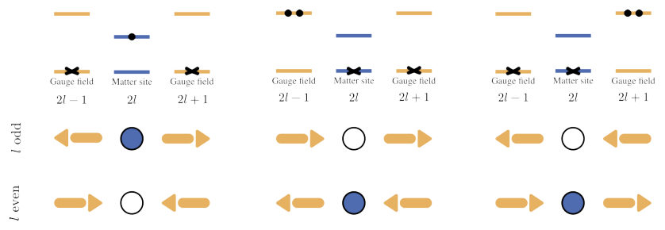
<figcaption class="paper-figure-caption"><b>Fig 1.</b> Figure 1. The U(1) gauge theory can be mapped exactly onto a bosonic chain with 2L −1 sites. The bosonic occupations are uniquely mapped to a gauge-theory configuration depending on the site’s parity. The left/right pointing yellow arrows represent the polarization of the gauge field ⟨Sz l ⟩= ±1/2. A filled/empty circle indicates an occupied/empty fermionic site. An occupied bosonic matter site corresponds to the presence of a charge in the QLM, while the location of doubly occupied gauge field sites indicates the polarization of the gauge field.</figcaption>
</figure>
<figure class="paper-figure-card">
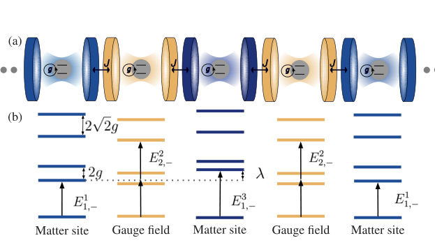
<figcaption class="paper-figure-caption"><b>Fig 2.</b> Figure 2. Mapping between the JCH model and the spin-1/2 QLM. (a) Schematic of a coupled cavity array in the strong coupling regime (g ≫J), consisting of alternating matter (blue) and gauge (orange) sites, each composed of a cavity coupled to a two-level emitter with a coupling rate g. Photon hopping between cavities occurs at a rate J. Colors indicate varying cavity frequency ωe. (b) Polariton energy level structure for each cavity. The anharmonic splitting of the JC ladder is tuned to support the resonance conditions E2i 2,−= E2i−1 1,−+ E2i+1 1,− to be satisfied simultaneously for all i across the array.</figcaption>
</figure>
<figure class="paper-figure-card">
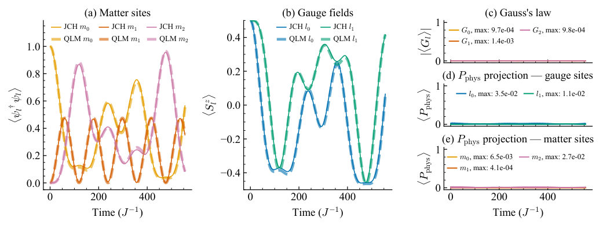
<figcaption class="paper-figure-caption"><b>Fig 3.</b> Figure 3. Real-time dynamics for the JCH model on a chain of five coupled cavities compared to the spin-1/2 QLM. (a) Matter site and (b) gauge field JCH occupation mapped to QLM observables (charge density and electric flux, respectively) as described by Eqs. (8) and (9). (c) Absolute value of the expectation value for the Gauss’s law operator |⟨Gl⟩| for each matter site l and the two adjacent gauge sites, which remains close to zero for all times, confirming confinement to the physical subspace by the gauge protection term λ. Gauss’s law Gl is defined in Eq. (4). Projection onto the physical state for (d) gauge fields and (e) matter sites as described by the set of equations in Eq. (10)....</figcaption>
</figure>
<figure class="paper-figure-card">
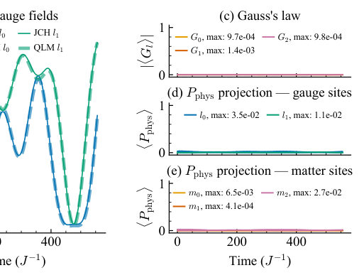
<figcaption class="paper-figure-caption"><b>Fig 4.</b> Figure 3 shows the real-time evolution comparison be- tween the full JCH model and spin-1/2 QLM for param- eters ωe/J = 500, ∆0/J = 111.1, g/J = 333.3, and λ/J = 40. The cavity modes are restricted to hold at most Nc = 3 photons to reduce the simulation runtime. To make comparisons, we map observables from one model to the other. On matter sites, this mapping is given by</figcaption>
</figure>
<figure class="paper-figure-card">
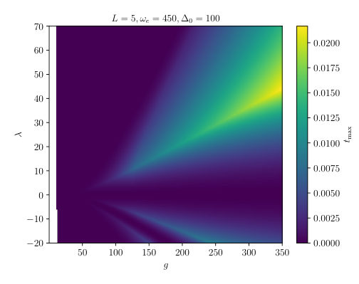
<figcaption class="paper-figure-caption"><b>Fig 5.</b> Figure 4. The possible strength of the effective interaction t varies with the parameters. The color indicates the maximum value of t that can be engineered while keeping J perturba- tively small. This ensures gauge invariance at intermediate timescales. White indicates that there is no valid solution to the resonance condition for these parameters.</figcaption>
</figure>
</div>

<p><strong>Summary.</strong> This paper proposes using coupled cavity arrays in cavity QED to analog quantum simulate a 1D U(1) Lattice Gauge Theory. By engineering the Jaynes-Cummings-Hubbard model, the authors successfully map the system's dynamics onto the target gauge theory, confirming its gauge-invariant evolution. This establishes a novel, scalable platform for studying complex many-body physics beyond classical simulation capabilities.</p>
<p><strong>Why it may be interesting.</strong> This work is highly relevant as it uses advanced cavity QED techniques (a core AMO topic) to tackle a fundamental problem in high-energy/condensed matter theory (LGTs), providing a concrete, experimentally viable quantum simulation blueprint.</p>
<details>
<summary>Detailed structure</summary>
<p><strong>Main problem.</strong> The paper addresses the challenge of developing a quantum simulation platform to study the real-time dynamics of a (1+1)-Dimensional U(1) Lattice Gauge Theory (LGT) coupled to dynamical matter.</p>
<p><strong>Main result.</strong> The authors demonstrate that the dynamics of the target LGT can be accurately replicated by engineering the Jaynes-Cummings-Hubbard (JCH) model in a coupled cavity array, confirming its potential for simulating gauge-invariant physics.</p>
<p><strong>Method.</strong> The simulation relies on mapping the LGT onto the JCH model using resonant engineering of polaritonic excitations, followed by verifying the dynamics using exact diagonalization.</p>
<p><strong>Model / system.</strong> The physical system is an array of interacting cavities operating in the strong-coupling regime of Cavity Quantum Electrodynamics (QED). The underlying model is the JCH Hamiltonian, which is engineered to mimic the spin-1/2 Quantum Link Model (QLM) Hamiltonian.</p>
<p><strong>Key observables.</strong> Gauge invariance (monitored via Gauss's law expectation value $\langle G_l 
angle$) and the confinement of the evolution to the physical subspace are key diagnostics.</p>
<p><strong>Important parameters / regimes.</strong> The simulation requires operating in the strong-coupling regime ($g \gg J$) and precise tuning of cavity detunings ($\Delta_i$) to achieve resonant coupling.</p>
<p><strong>Assumptions / limitations.</strong> The analysis assumes the system can be effectively described by the JCH model and relies on deriving an effective Hamiltonian via second-order perturbation theory.</p>
<p><strong>Figures summary.</strong> Figures illustrate the mapping of the U(1) gauge theory onto a bosonic chain and schematically depict the mapping between the JCH model and the spin-1/2 QLM in a coupled cavity array.</p>
<p><strong>Paper structure.</strong> The paper introduces the LGT problem, details the mapping from the QLM to the JCH model using cavity QED principles, shows the successful replication of real-time dynamics via numerical simulation, and concludes by discussing scalable implementations in photonic and superconducting platforms.</p>
</details>
<details>
<summary>Abstract</summary>
<p>We propose a photonic scheme for analog quantum simulation of a $U(1)$ Lattice Gauge Theory (LGT) with dynamical matter based on the Jaynes-Cummings-Hubbard (JCH) model. Here, an array of interacting cavities in the strong-coupling regime of cavity Quantum Electrodynamics is mapped onto the alternating matter and gauge-field sites of the spin-1/2 Quantum Link Model. In contrast to other analog LGT quantum simulation methods, our approach implements the desired gauge-invariant dynamics through the hopping of polaritonic excitations among the array sites. The hopping is mapped to the gauge theory via precise tuning of polaritonic resonances in individual cavities. Using exact diagonalization, we show that the real-time evolution of the JCH model accurately replicates that of a Quantum Link Model. Finally, we discuss feasible routes to the beyond-classical simulation capability with scalable implementations in photonic and superconducting systems. This provides a novel route towards understanding the real-time dynamics of lattice gauge theories with matter in higher dimensions.</p>
</details>
<p><sub><a href="#top">↑ back to top</a></sub></p>

<p><a id="paper-2606.03884"></a></p>
<h3 id="20-second-parity-lifetime-in-an-inas-pb-tetron-device"><a href="http://arxiv.org/abs/2606.03884v1">20 Second Parity Lifetime in an InAs--Pb Tetron Device</a></h3>
<p><strong>Authors:</strong> Morteza Aghaee, Zulfi Alam, Mariusz Andrzejczuk, Andrey Antipov, Theodora Asimakidis, Mikhail Astafev, Lukas Avilovas, Ahmad Azizimanesh, Amin Barzegar, Bela Bauer, Jonathan Becker, Umesh Kumar Bhaskar, Andrea G. Boa, Srini Boddapati, Nichlaus Bohac, Jouri Bommer, Jan Borovsky, Léo Bourdet, Samuel Boutin, Srivatsa Chakravarthi, Benjamin J. Chapman, Nikolaos Chatzaras, Tzu-Chiao Chien, Jason Cho, Patrick T. Codd, William Cole, Paul W. Cooper, Fabiano Corsetti, Ajuan Cui, Tareq El Dandachi, Konstantinos Divanis, Clayton Doyle, Andreas Ekefjard, Javier A. Falcon, Saeed Fallahi, Luca Galletti, Geoffrey C. Gardner, Haris Gavranovic, João Pedro Morais Gomes, Deshan Govender, Flavio Griggio, Ruben Grigoryan, Sebastian Grijalva, Sergei Gronin, Jan Gukelberger, Marzie Hamdast, Esben Bork Hansen, Sebastian Heedt, Samantha Ho, Laurens Holgaard, Kevin van Hoogdalem, Jinnapat Indrapiromkul, Henrik Ingerslev, Lovro Ivancevic, Max Jantos, Thomas Jensen, Jaspreet Singh Jhoja, Vidul R. Joshi, Konstantin V. Kalashnikov, Ray Kallaher, Rachpon Kalra, Farhad Karimi, Torsten Karzig, Maren Elisabeth Kloster, Christina Knapp, Jonathan Knoblauch, Jonne Koski, Anders Kringhøj, Tom Laeven, Jeffrey Lai, Gijs de Lange, Thorvald W. Larsen, Kyunghoon Lee, Kongyi Li, Shuang Liang, Tyler Lindemann, Luna Lochmatter, Marijn Lucas, Roman Lutchyn, Morten Hannibal Madsen, Nasiari Madulid, Ivan Maliyov, Yanick Mampaey, Michael Manfra, Signe Brynold Markussen, Esteban A. Martinez, J. R. Mattinson, Mónica Meira, Camille A. Mikolas, Sarang Mittal, Gopakumar Mohandas, Christian Mollgaard, Michiel W. A. de Moor, Chris Moore, George Moussa, Bhargav Nabar, Anirudh Narla, Ahmad Naseri, Chetan Nayak, Bjørn Funch Schrøder Nielsen, Jens Hedegaard Nielsen, Michael J. Nystrom, Eoin O'Farrell, Keita Ohtani, Theodore Rex Orth, Sara Di Paolo, Camille Papon, Luca Petit, Dima Pikulin, Mohana Rajpalke, Alejandro Alcaraz Ramirez, Katrine Rasmussen, David Razmadze, Yuan Ren, Mariya Romanova, Loïc Roure, Ivan Sadovskyy, Lauri Sainiemi, Juan Carlos Estrada Saldaña, Irene Sanlorenzo, Tatiane Pereira dos Santos, Carl Vincent C. Saruda, Simon Schaal, John Schack, Emma R. Schmidgall, Christina Sfetsou, Cristina Sfiligoj, Zahra Shekason, Sarat Shankar Sinha, Patrick Sohr, Maria João Lourenço de Sousa, Kasper Roed Spiegelhauer, Tomas Stankevic, Henri J. Suominen, Judith Suter, Attila Szénási, Samuel M. L. Teicher, Naganivetha Thiyagarajah, Raj Tholapi, Mason Thomas, Dennis Tom, Emily Toomey, Joshua Tracy, Michelle Turley, Matthew D. Turner, Ivan Urban, Aakash Valliappan, Dmitrii V. Viazmitinov, Anna Wulff Viazmitinova, Dominik Johannes Vogel, Wenbo Wang, Christopher A. Watson, John Watson, Alex Webster, Timothy Williamson, Georg W. Winkler, David J. van Woerkom, Brian Paquelet Wuetz, Cécile X. Yu, Emrah Yucelen, Jesús Herranz Zamorano, Roland Zeisel, Guoji Zheng, A. M. Zimmerman<br>
<strong>Type:</strong> experiment · <strong>Category:</strong> quantum information and computing · <strong>PDF:</strong> <a href="https://arxiv.org/pdf/2606.03884v1">https://arxiv.org/pdf/2606.03884v1</a><br>
<strong>Analysis basis:</strong> full PDF text, analyzed in chunks
<strong>Topic relevance:</strong> 🔥 <code>QC/QI experiment</code> <strong>5/5</strong> · <code>quantum measurements</code> <strong>3/5</strong></p>
<div class="figure-strip-hint">↔ Scroll figures horizontally</div>
<div class="paper-figures-scroll">
<figure class="paper-figure-card">
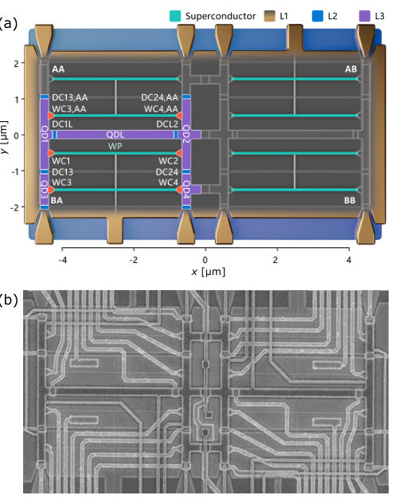
<figcaption class="paper-figure-caption"><b>Fig 1.</b> FIG. 1. Scalable unit cell for multi-qubit tetron array. (a) Schematic of the tetron-based unit cell used for multi-qubit devices. Each tetron consists of two parallel proximitized NWs connected by a superconducting backbone, forming an H-shaped island that hosts four Majorana zero modes (MZMs) at the wire ends when tuned into the topological regime. Color- coded gates illustrate the three-layer architecture: electrostatic tuning gates set the nanowire density, junction and cutter gates control tunnel couplings to define and reconfigure interfero- metric loops, and gate-defined quantum dots (QDs) provide dispersive parity readout. Neighboring tetrons are coupled via shared QDs, enabling...</figcaption>
</figure>
<figure class="paper-figure-card">
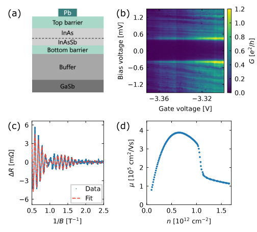
<figcaption class="paper-figure-caption"><b>Fig 2.</b> FIG. 2. Enhanced material stack. (a) Schematic of a hybrid material stack combining Pb with a composite quantum well. (b) Conductance as a function of bias voltage and split- gate voltage in a superconducting quantum point contact to a 2D Pb-covered half-plane in the tunneling regime. A large induced gap is clearly visible. (c) Shubnikov–de Haas oscillations, showing long quantum lifetime and large spin- orbit coupling in a shallow quantum well under Pb, as obtained via the analysis procedure of Ref. 78. We extract a density of 0.49±0.02×1012 cm−2, a spin-orbit coupling of 12±2 meV nm, and a quantum lifetime of 0.37 ± 0.14 ps. (d) Mobility as a function of density in a buried quantum well...</figcaption>
</figure>
<figure class="paper-figure-card">
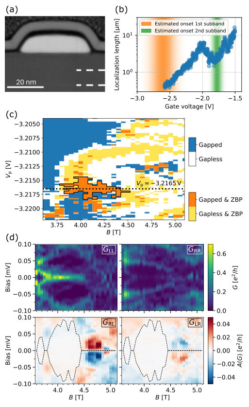
<figcaption class="paper-figure-caption"><b>Fig 3.</b> FIG. 3. (a) Cross-sectional TEM of a narrow Pb strip on the surface of semiconductor barrier and quantum well, dashed lines indicate interfaces at the top and bottom of the quantum well. (b) Measured localization length as a function of gate voltage extracted from 14 wires with different lengths of 1.25 µm and 3 µm. The estimated 1D subband onsets are extracted from quantized local conductance steps. (c) Phase diagram obtained from a TGP analysis of transport data from a 3 µm-long nanowire test structure. (d) B-field line cut along Vp = 3.2165 V showing local and anti-symmetrized non-local conductance along the dashed line in panel (c). Zero-bias peaks at the opposite ends of the NW persist...</figcaption>
</figure>
<figure class="paper-figure-card">
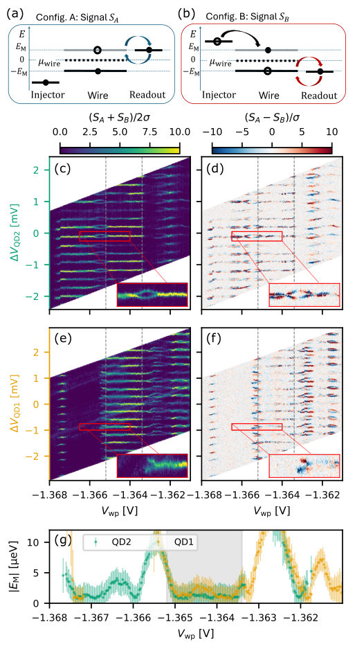
<figcaption class="paper-figure-caption"><b>Fig 4.</b> FIG. 4. Wire spectroscopy. (a,b) Schematic of the quasi- particle injection procedure. The injector QD leads to a parity switch of the wire state, which, for finite EM, shifts the wire- readout QD resonance condition. (c,e) Mean of the normalized rf signal measured on QD1 (QD2) averaged over QD2 (QD1) configurations where S is the measured rf signal along the quadrature with maximal signal and σ the noise along the orthogonal quadrature. (d,f) Difference of the normalized signal measured in configurations (a) and (b). For better visibility, the insets in panels (c–f) each show a zoom-in on parts of a single QD-wire transition. (g) Extracted wire state energy EM based on analyzing the...</figcaption>
</figure>
<figure class="paper-figure-card">
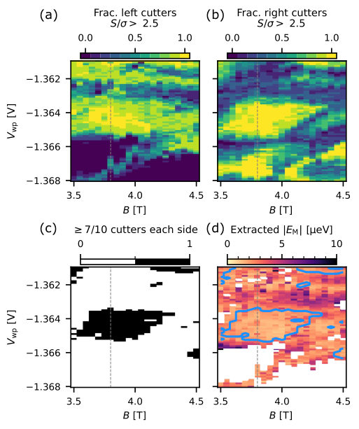
<figcaption class="paper-figure-caption"><b>Fig 5.</b> FIG. 5. Regions with a stable low-energy state at both ends of the wire detected by rf-based wire tuning. (a,b) Fraction of measured left (right) wire cutter configura- tions where the signal measured on the left (right) QD is above the selected threshold S/σ &gt; 2.5 where S is the measured rf signal along the quadrature with maximal signal and σ the noise along the orthogonal quadrature. (c) Regions where the measured signal at both ends of the wire is above threshold for at least 7/10 cutter configurations. (d) Estimated energy EM of the wire low-energy mode averaged over the value extracted from the measurements at each end of the wire. Overlaid in blue is the contour of the region of...</figcaption>
</figure>
</div>

<p><strong>Summary.</strong> This work experimentally validates the use of high-gap superconductors (Pb) in InAs tetron devices to enhance topological protection. By measuring the parity switching time, the authors report a lifetime of $\sim 20$ seconds, significantly exceeding current qubit timescales. This demonstrates that increasing the superconducting gap effectively suppresses quasiparticle poisoning, a key requirement for scalable topological quantum computation.</p>
<p><strong>Why it may be interesting.</strong> The demonstrated long parity lifetime directly addresses a major decoherence bottleneck in topological quantum computing, providing a crucial experimental benchmark for fault-tolerant quantum information processing.</p>
<details>
<summary>Detailed structure</summary>
<p><strong>Main problem.</strong> To experimentally validate that increasing the superconducting excitation gap improves the robustness and lifetime of topological superconducting phases used for quantum computing.</p>
<p><strong>Main result.</strong> The authors achieved an extremely long parity lifetime of $\sim 20$ seconds in an InAs--Pb tetron device, which is orders of magnitude longer than typical qubit operation times.</p>
<p><strong>Method.</strong> The study employs interferometric single-shot parity measurements and develops a novel RF measurement technique to probe low-energy wire-end states.</p>
<p><strong>Model / system.</strong> The physical platform is an InAs--Pb tetron device, a superconductor-semiconductor hybrid structure designed to host Majorana zero modes (MZMs) for topological quantum computation. The system's robustness is enhanced by using the higher-gap superconductor Lead (Pb) instead of Aluminum (Al).</p>
<p><strong>Key observables.</strong> Parity switching time ($   au_Z$), quantum capacitance shifts, and the topological gap ($\Delta_T$).</p>
<p><strong>Important parameters / regimes.</strong> Parity lifetime ($\sim 20$ s), Topological Gap ($\Delta_T \sim 70 \mu	ext{eV}$), Majorana hybridization splitting ($E_M < 1 \mu	ext{eV}$).</p>
<p><strong>Assumptions / limitations.</strong> The improvement in robustness is directly attributed to the increased superconducting gap, which suppresses quasiparticle poisoning effects.</p>
<p><strong>Figures summary.</strong> Figures illustrate the device architecture, material characterization (SdH oscillations, mobility), the RF spectroscopy setup, and time-resolved measurements showing the exponential decay of the parity state over seconds.</p>
<p><strong>Paper structure.</strong> The paper progresses from demonstrating improved material quality and gap size using Pb, to developing high-precision RF spectroscopy to measure low-energy states, and finally culminates in time-resolved measurements to quantify the dramatically extended parity lifetime.</p>
</details>
<details>
<summary>Abstract</summary>
<p>A central promise of topological quantum computing is that increasing the excitation gap improves device performance significantly. Here, we experimentally validate this principle in an InAs--Pb tetron device via interferometric single-shot parity measurements. By replacing aluminum with the higher-gap superconductor lead in our superconductor-semiconductor hybrid devices, we have improved the robustness of our topological phase. In addition, to enable fast and precise bring-up at scale, we have developed an rf measurement technique that resolves low-energy wire-end states and directly measures their energy splitting with $μ\text{eV}$ precision. We employ this technique to bring up a device in a multi-tetron array and perform parity measurements of one of the tetron's hybrid nanowires (NWs). By controllably switching the wire parity, we observe $h/2e$-periodic bimodal shifts in the quantum capacitance of a quantum dot coupled to the hybrid nanowire in an interference loop. Further time-resolved measurements reveal a characteristic parity switching time of $\sim 20$ s with some instances reaching minute-scale. Such extremely long parity lifetimes are orders of magnitude longer than typical qubit operation times, which are on the order of $μ\text{s}$. Finally, we discuss potential implications for the fidelity of Pauli measurements.</p>
</details>
<p><sub><a href="#top">↑ back to top</a></sub></p>

<p><a id="paper-2606.03167"></a></p>
<h3 id="post-selection-free-generation-of-multi-photon-added-coherent-states"><a href="http://arxiv.org/abs/2606.03167v1">Post-Selection Free Generation of Multi-Photon Added Coherent States</a></h3>
<p><strong>Authors:</strong> Mariano Uria, Ricardo Gutiérrez-Jáuregui, Carla Hermann-Avigliano, Pablo Solano<br>
<strong>Type:</strong> both · <strong>Category:</strong> other · <strong>PDF:</strong> <a href="https://arxiv.org/pdf/2606.03167v1">https://arxiv.org/pdf/2606.03167v1</a><br>
<strong>Analysis basis:</strong> full PDF text, analyzed in chunks
<strong>Topic relevance:</strong> 🔥 <code>quantum optics experiment</code> <strong>4/5</strong> · <code>correlated cavity matter</code> <strong>3/5</strong> · <code>driven-dissipative phase transition</code> <strong>3/5</strong> · <code>methods for driven-dissipative</code> <strong>3/5</strong> · <code>Tavis-Cummings &amp; cavity-many-emitter</code> <strong>2/5</strong> · <code>analog quantum simulation</code> <strong>2/5</strong> · <code>non-equilibrium dynamics</code> <strong>2/5</strong> · <code>quantum measurements</code> <strong>2/5</strong> · <code>Keldysh / 2PI / non-Gaussian methods</code> <strong>1/5</strong> · <code>QC/QI experiment</code> <strong>1/5</strong> · <code>correlated / nonlocal dissipation</code> <strong>1/5</strong> · <code>entanglement &amp; information structure</code> <strong>1/5</strong> · <code>interference shaping light</code> <strong>1/5</strong> · <code>measurement-induced transitions</code> <strong>1/5</strong> · <code>non-equilibrium universality</code> <strong>1/5</strong></p>
<div class="figure-strip-hint">↔ Scroll figures horizontally</div>
<div class="paper-figures-scroll">
<figure class="paper-figure-card">
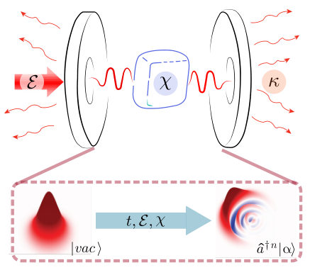
<figcaption class="paper-figure-caption"><b>Fig 1.</b> FIG. 1. Schematic of the protocol for high fidelity gener- ation of PACS. A coherent drive of amplitude E excites a single-mode cavity with Kerr nonlinearity χ and decay rate κ. Starting from the vacuum state |vac⟩, the system reaches a state resembling a displaced multi-photon added coherent state ˆa†n |α⟩at a time t. The lower panel illustrates the trans- formation in phase space, highlighting the emergence of non- classical features from an initially Gaussian state.</figcaption>
</figure>
<figure class="paper-figure-card">
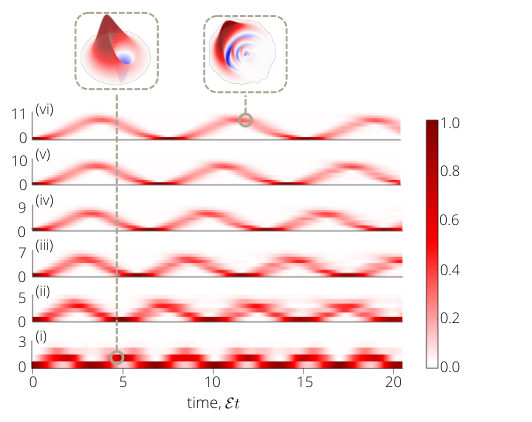
<figcaption class="paper-figure-caption"><b>Fig 2.</b> FIG. 2. Photon number distribution as a function of evolution time for different driving values (E/χ = 1.5, 4.5, 7.25, 10, 13, 16) and fixed δ = 2χ. The roman nu- merals represent the number of added photons for the best PACS generated in each driving regime. The insets on the top represent the Wigner function of the best PACS found in the left (n = 1) and right (n = 6) cases.</figcaption>
</figure>
<figure class="paper-figure-card">
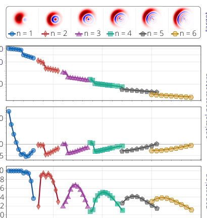
<figcaption class="paper-figure-caption"><b>Fig 3.</b> FIG. 3. Fidelities and optimal parameters for PACS gen- eration. The horizontal axis represents the drive amplitude E normalized by the nonlinear parameter χ. From top to bottom: Wigner function representations, optimal evolution time, amplitude of the coherent component, and optimal fi- delity of the obtained PACS. The shapes connected by colored curves represent the different number of photons added n in the obtained PACS. We considered a drive detuning δ = 2χ for all the calculations.</figcaption>
</figure>
<figure class="paper-figure-card">
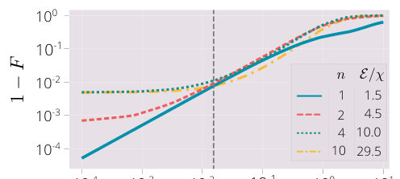
<figcaption class="paper-figure-caption"><b>Fig 4.</b> FIG. 4. Infidelity for the optimal cases under decoherence for different driving amplitudes E, with optimized numbers of added photons n. The vertical dashed gray line indicates the experimental state-of-the-art relation between the deco- herence rate κ and the nonlinearity χ, as reported in Ref. [21].</figcaption>
</figure>
</div>

<p><strong>Summary.</strong> This paper presents a deterministic method to generate multi-photon added coherent states (PACS) using a driven Kerr nonlinear resonator. By leveraging the photon blockade effect, the protocol avoids probabilistic measurement steps, achieving high fidelity even when considering realistic cavity dissipation. This provides a robust platform for creating complex non-classical resources for quantum technologies.</p>
<p><strong>Why it may be interesting.</strong> This work directly applies advanced concepts from cavity QED and nonlinear quantum optics (Kerr media, photon blockade) to create a deterministic source of complex non-classical states, which is a major goal in quantum information science.</p>
<details>
<summary>Detailed structure</summary>
<p><strong>Main problem.</strong> The paper addresses the challenge of deterministically generating high-fidelity multi-photon added coherent states (PACS) without relying on probabilistic post-selection schemes.</p>
<p><strong>Main result.</strong> A protocol is proposed and demonstrated that achieves fidelities exceeding 99% for generating PACS using a driven Kerr nonlinear resonator, even under realistic dissipative conditions.</p>
<p><strong>Method.</strong> The generation relies on exploiting the photon blockade effect within the cavity dynamics, monitored using a frame-independent witness called the remnant photon number ($n_r$).</p>
<p><strong>Model / system.</strong> The system is a single-mode cavity containing a Kerr nonlinear medium, modeled by a Hamiltonian $H_R$ in the rotating frame. The dynamics are analyzed using both unitary evolution and the Lindblad master equation to account for dissipation.</p>
<p><strong>Key observables.</strong> Remnant Photon Number ($n_r$), Fidelity ($F(t)$), Mean Photon Number ($\langle\hat{n}(t)
angle$), and the time evolution of the state in phase space.</p>
<p><strong>Important parameters / regimes.</strong> The Kerr nonlinearity ($\chi$), cavity detuning ($\delta$), external drive power ($E$), and cavity decay rate ($\kappa$). The condition $\delta = 2\chi$ is noted as central for certain analyses.</p>
<p><strong>Assumptions / limitations.</strong> The initial state is assumed to be the vacuum state. The analysis involves heuristic approximations and the assumption that $n_r$ is a superior, displacement-independent witness for non-classicality.</p>
<p><strong>Figures summary.</strong> Figures illustrate the protocol schematic, the photon number distribution showing blockade effects, and quantitative results showing fidelity vs. time/parameters for PACS generation.</p>
<p><strong>Paper structure.</strong> The paper develops the theoretical framework by defining the Hamiltonian and the remnant photon number witness. It then details the protocol, showing how the system dynamics naturally lead to the desired state, followed by numerical and analytical confirmation of high fidelity.</p>
</details>
<details>
<summary>Abstract</summary>
<p>Non-Gaussian quantum states are essential resources for continuous-variable quantum information processing and for metrology. Among these, multi-photon added coherent states bridge classical and non-classical behaviors; however, their generation typically relies on small photon numbers and probabilistic heralding schemes. Here, we propose a protocol for the post-selection free generation of high fidelity multi-photon added coherent states using the photon blockade effect in a driven Kerr nonlinear resonator, where such states emerge naturally during the dynamics. We demonstrate that high-fidelity states can be prepared by optimizing the external drive power and the interaction time. Furthermore, we show that the protocol is robust under realistic experimental conditions, achieving fidelities of $\approx 99\%$ with current state-of-the-art parameters. Our results unlock a deterministic route to complex non-classical states using well-established quantum optical platforms.</p>
</details>
<p><sub><a href="#top">↑ back to top</a></sub></p>

<p><a id="paper-2606.03438"></a></p>
<h3 id="populating-topologically-protected-edge-states-of-a-chern-insulator-with-the-cold-atom-elevator-scheme-and-measurements"><a href="http://arxiv.org/abs/2606.03438v1">Populating topologically protected edge states of a Chern insulator with the cold-atom elevator scheme and measurements</a></h3>
<p><strong>Authors:</strong> Toke Marstrand Pontoppidan Lindhard, Anne E. B. Nielsen<br>
<strong>Type:</strong> theory · <strong>Category:</strong> other · <strong>PDF:</strong> <a href="https://arxiv.org/pdf/2606.03438v1">https://arxiv.org/pdf/2606.03438v1</a><br>
<strong>Analysis basis:</strong> full PDF text, analyzed in chunks
<strong>Topic relevance:</strong> 🔥 <code>analog quantum simulation</code> <strong>4/5</strong> · 🔥 <code>measurement-induced transitions</code> <strong>4/5</strong> · 🔥 <code>quantum measurements</code> <strong>4/5</strong> · <code>driven-dissipative phase transition</code> <strong>3/5</strong> · <code>methods for driven-dissipative</code> <strong>3/5</strong> · <code>non-equilibrium dynamics</code> <strong>2/5</strong> · <code>Keldysh / 2PI / non-Gaussian methods</code> <strong>1/5</strong> · <code>Kondo &amp; dissipative impurity</code> <strong>1/5</strong> · <code>correlated / nonlocal dissipation</code> <strong>1/5</strong> · <code>entanglement &amp; information structure</code> <strong>1/5</strong> · <code>exotic spin models in light-matter</code> <strong>1/5</strong> · <code>non-equilibrium universality</code> <strong>1/5</strong></p>
<div class="figure-strip-hint">↔ Scroll figures horizontally</div>
<div class="paper-figures-scroll">
<figure class="paper-figure-card">
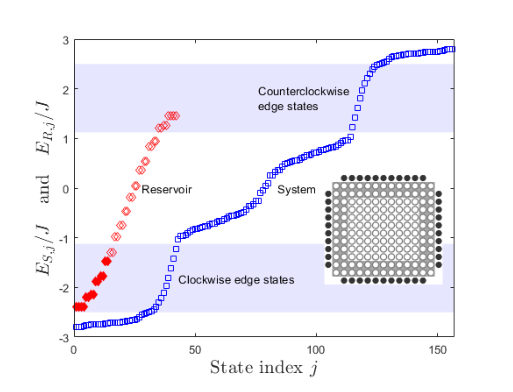
<figcaption class="paper-figure-caption"><b>Fig 1.</b> FIG. 1. Single-particle energy spectrum (blue squares) of the system with 13 × 12 sites (white sites in inset) and magnetic flux ϕ = π/2. States with at least 97% of their particles on the two outermost rows or columns (the region with gray back- ground in the inset) are marked as edge states. The clockwise group consists of the states C = {31, . . . , 42}, and the coun- terclockwise group consists of the states CC = {115, . . . , 126}. The single-particle spectrum (red diamonds) of the reservoir (black sites in the inset) with ϵR given in Eq. (2) is also shown. The filled (empty) diamonds indicate single-particle states that are initially occupied (unoccupied).</figcaption>
</figure>
<figure class="paper-figure-card">
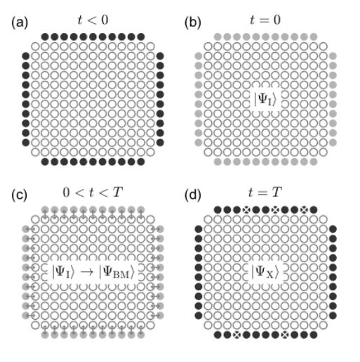
<figcaption class="paper-figure-caption"><b>Fig 2.</b> FIG. 2. The proposed scheme. Each circle represents a site on the two-dimensional lattice. The circles with white filling constitute the 13 × 12 system, while the circles with gray or black filling constitute the reservoir of sizes 1 × 10 and 11 × 1. The reservoir does not wrap around the corners of the system to avoid a too strong coupling between the corner sites and the reservoir. (a) For t &lt; 0, the system and the reservoir are decoupled, either by putting JB equal to zero or by choosing |εR| to be sufficiently large. This is represented by the dark color of the reservoir sites. (b) At t = 0, the coupling between the system and the reservoir is turned on by putting JB = J and instantly...</figcaption>
</figure>
<figure class="paper-figure-card">
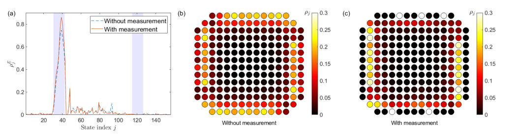
<figcaption class="paper-figure-caption"><b>Fig 3.</b> FIG. 3. Particle population of the energy eigenstates of the system and of the lattice sites for T = π/(2J) and the measurement outcome illustrated in Fig. 2(d). (a) The particle population of the energy eigenstates as a function of the state index. The blue background color indicates the clockwise (left) and counterclockwise (right) edge groups as given in Fig. 1. For this example, the total number of particles in the clockwise edge group is RC = 5.74 without measurement and RC = 6.47 with measurement. The corresponding numbers for the counterclockwise edge modes are RCC = 0.025 and RCC = 0.024, respectively. (b) The particle population of the sites when no measurement is performed. In...</figcaption>
</figure>
<figure class="paper-figure-card">
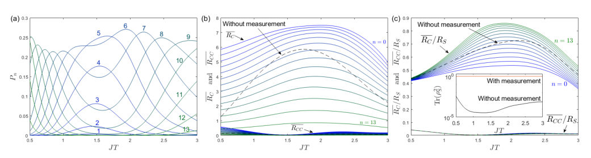
<figcaption class="paper-figure-caption"><b>Fig 4.</b> FIG. 4. (a) Probability Pn to measure n particles in the reservoir as a function of the time the system and reservoir are coupled. The individual curves are labeled by n. (b) The expectation value of the total number of particles in the clockwise (counterclockwise) edge states averaged over all measurement outcomes detecting a total of n particles in the reservoir. For comparison, the dashed lines show the expectation value of the number of particles in the two sets of edge states when no measurement is performed. (c) The same data as in panel (b), except that we here divide by the expectation value of the total number of particles in the system. The inset shows the purity of the state of...</figcaption>
</figure>
</div>

<p><strong>Summary.</strong> This paper analyzes a method to populate the chiral edge states of a Chern insulator simulated with ultracold atoms. By introducing an instantaneous projective measurement on the particle reservoir, the system state can be projected into a pure state. The key finding is that postselecting on specific measurement outcomes allows researchers to significantly enhance the population of the desired edge states compared to standard preparation methods.</p>
<p><strong>Why it may be interesting.</strong> This work directly bridges topological physics (Chern insulators) with advanced experimental platforms (cold atoms) and complex quantum measurement theory, providing concrete, calculable protocols for state preparation.</p>
<details>
<summary>Detailed structure</summary>
<p><strong>Main problem.</strong> The paper investigates how to populate topologically protected, chiral edge states in a Chern insulator using the cold-atom elevator scheme.</p>
<p><strong>Main result.</strong> Performing an instantaneous, projective measurement on the reservoir allows for the preparation of pure system states and can enhance the population of chiral edge states through postselection.</p>
<p><strong>Method.</strong> The authors developed a numerical method to calculate measurement probabilities and expectation values for the post-measurement state, which scales linearly with lattice sites.</p>
<p><strong>Model / system.</strong> The system models a Chern insulator using spinless fermions in the Harper-Hofstadter model on a 2D lattice, coupled to a reservoir via an 'elevator' mechanism using ultracold atoms in optical lattices.</p>
<p><strong>Key observables.</strong> Particle populations in clockwise ($R_C$) and counterclockwise ($R_{CC}$) edge states, system purity ($ ext{Tr}(
ho_S^2)$), and the probability distribution $P_n$ of measuring $n$ particles in the reservoir.</p>
<p><strong>Important parameters / regimes.</strong> Coupling time $T$, the number of particles measured in the reservoir ($n$), and the magnetic flux $\phi$. Optimal transfer occurs around $T \approx \pi/(2J)$.</p>
<p><strong>Assumptions / limitations.</strong> The measurement is assumed to be instantaneous, and the reservoir is assumed to be topologically trivial. The method is derived for noninteracting, fermionic models conserving particle number.</p>
<p><strong>Figures summary.</strong> Figures illustrate the energy spectrum, the experimental scheme involving coupling and measurement, and show how particle populations ($R_C, R_{CC}$) and measurement probabilities ($P_n$) change as a function of coupling time $T$ and measurement outcome $n$.</p>
<p><strong>Paper structure.</strong> The paper first introduces the physical setup and the challenge of measurement. It then details the theoretical framework for calculating post-measurement observables, showing how the measurement step leads to pure states. Finally, it presents results demonstrating that postselection can optimize the population of desired edge states.</p>
</details>
<details>
<summary>Abstract</summary>
<p>Two-dimensional Chern insulators support topologically protected, chiral edge currents, and these can be detected in experiments with ultracold atoms in optical lattices. It has previously been shown that one can populate a selected group of edge states of a Chern insulator by transferring particles from a reservoir. Here, we numerically investigate the effect of performing an instantaneous, projective measurement on the reservoir before the reservoir is discarded. In this way, the final state of the system is pure and described by a wavefunction. We also show that quite likely measurement outcomes can help to increase the final number or percentage of particles in the chiral edge states through postselection. Without the measurement step, the physics can be described in terms of single-particle physics. The measurement significantly complicates the description. By appropriately rewriting the analytical expressions, we show that measurement probabilities, expectation values, averages of expectation values, and purity can nevertheless be computed from the state before the measurement in a way that scales only linearly with the number of lattice sites for a fixed number of particles. This enables us to investigate a setup with, for instance, 14 particles and 198 lattice sites numerically. The approach applies generally to noninteracting, fermionic models that conserve the number of particles.</p>
</details>
<p><sub><a href="#top">↑ back to top</a></sub></p>

<p><a id="paper-2606.02713"></a></p>
<h3 id="a-mean-field-description-of-strong-to-weak-symmetry-breaking-in-the-monitored-three-dimensional-bose-hubbard-model"><a href="http://arxiv.org/abs/2606.02713v1">A mean-field description of strong-to-weak symmetry breaking in the monitored three-dimensional Bose-Hubbard model</a></h3>
<p><strong>Authors:</strong> Yicheng Tang, Pradip Kattel, J. H. Pixley<br>
<strong>Type:</strong> theory · <strong>Category:</strong> statistical mechanics · <strong>PDF:</strong> <a href="https://arxiv.org/pdf/2606.02713v1">https://arxiv.org/pdf/2606.02713v1</a><br>
<strong>Analysis basis:</strong> full PDF text, analyzed in chunks
<strong>Topic relevance:</strong> 🔥 <code>driven-dissipative phase transition</code> <strong>4/5</strong> · 🔥 <code>measurement-induced transitions</code> <strong>4/5</strong> · <code>analog quantum simulation</code> <strong>3/5</strong> · <code>methods for driven-dissipative</code> <strong>3/5</strong> · <code>non-equilibrium universality</code> <strong>3/5</strong> · <code>quantum measurements</code> <strong>3/5</strong> · <code>Keldysh / 2PI / non-Gaussian methods</code> <strong>2/5</strong> · <code>non-equilibrium dynamics</code> <strong>2/5</strong> · <code>correlated / nonlocal dissipation</code> <strong>1/5</strong></p>
<div class="figure-strip-hint">↔ Scroll figures horizontally</div>
<div class="paper-figures-scroll">
<figure class="paper-figure-card">
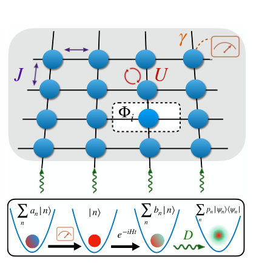
<figcaption class="paper-figure-caption"><b>Fig 1.</b> FIG. 1: Illustration of the Bose-Hubbard model with hopping J (blue arrows) and onsite interaction U (red arrows), subject to measurement (orange dashed lines) at rate γ and dissipation (green wavy lines) at rate D. The system is simulated using GMFT, where the local mean-field Hamiltonian at site i (unshaded) is obtained by tracing out all other sites (shaded) and depends on the mean field Φi defined in Eq. (5). The lower panel il- lustrates the interplay of measurement, Hamiltonian dy- namics, and dissipation. Measurement projects the state onto a number eigenstate |n⟩(single-color circle), de- stroying quantum coherence. Subsequent Hamiltonian evolution regenerates coherence...</figcaption>
</figure>
<figure class="paper-figure-card">
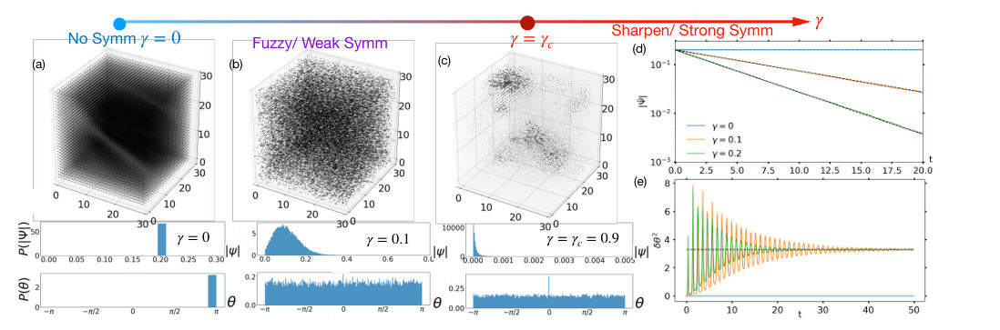
<figcaption class="paper-figure-caption"><b>Fig 2.</b> FIG. 2: Panels (a)–(c) show the configuration of the superfluid order parameter Ψi = |Ψi|eiθi with arrows for a single shot in the steady state t = 50 with model parameter D = 0, U = J = 1, α = 0.2 and system size L = 30 for various measurement rate γ. The norm |Ψ| sets the length of a single arrow, and the arrow direction is determined by the phase in the direction (sin θ, cos θ, 0). (a) γ = 0 has broken symmetry with coherent phases θi = θj and Ψi = Ψj with a delta-function distribution in both variables over sites. (b) γ = 0.1 in the weak symmetry (charge fuzzy) phase, where |Ψi| ̸= 0 but with phases for each site that are randomly distributed. (c) γ = 0.9 at criticality. To visualize...</figcaption>
</figure>
<figure class="paper-figure-card">
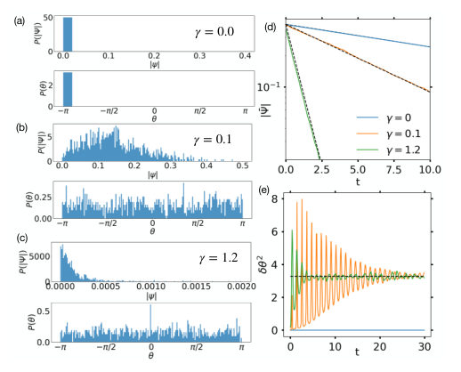
<figcaption class="paper-figure-caption"><b>Fig 3.</b> FIG. 3: Configuration of the local superfluid order pa- rameter Ψi for a single quantum trajectory at t = 50, with dissipation rate D = 0.1, U = J = 1, α = 0.2, and L = 30. Panels (a)–(c) show the evolution from the weak-symmetry to the strong-symmetry regime as γ increases. Unlike the nondissipative case, the system at γ = 0 evolves toward the infinite-temperature mixed state ρi ∝I, which is a weak-symmetry state. Panel (d) shows the decay of |¯Ψ(t)| ≃αe−(D/2+γ)t, indicated by the dashed line.</figcaption>
</figure>
<figure class="paper-figure-card">
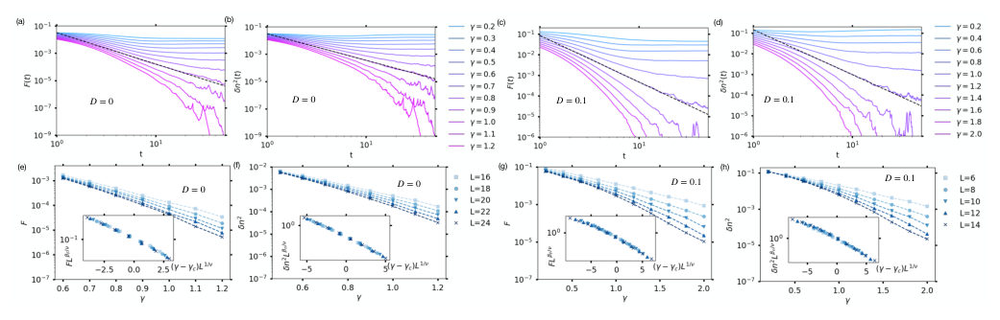
<figcaption class="paper-figure-caption"><b>Fig 4.</b> FIG. 4: Upper four panels (a-d) show the time evolution for two order parameters, with varying measurement rate γ. (a) shows F(t) with βF /νz = 2.252 ± 0.005 and (b) shows δn2(t) with βn/νz = 1.979 ± 0.004 at L = 24, α = 0.2 and D = 0. (c) shows F(t) with βF /νz = 2.253 ± 0.006 and (d) shows δn2(t) with βn/νz = 2.179 ± 0.008, at L = 14, α = 0.4 and D = 0.1. The dashed line is the fitting of the scaling behavior at criticality O(t) = A tβ/νz . The lower four panels (e-h) show the scaling behavior at time t = L, with the insets showing the data collapse using the scaling ansatz defined in Eq.9. (e) gives critical values γc = 0.894 ± 0.02, ν = 1.30 ± 0.06, (f) gives γc = 0.873 ± 0.01, ν = 1.18...</figcaption>
</figure>
<figure class="paper-figure-card">
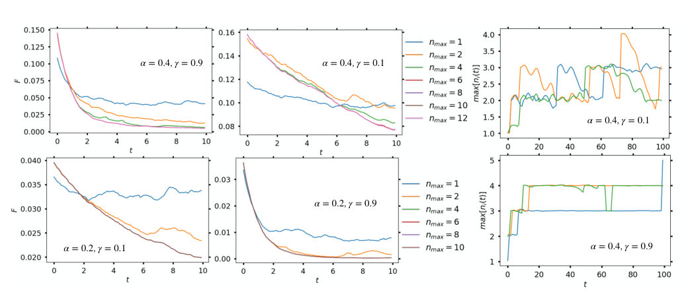
<figcaption class="paper-figure-caption"><b>Fig 5.</b> FIG. 5: The left and middle panels show the time evolution of the R´enyi-2 correlator F(t) for different local Hilbert- space truncations nmax, fillings α, and measurement rates γ. The right panels show the corresponding maximum occupation number max[n(t)]. All panels use the common color scheme indicated by the legend.</figcaption>
</figure>
</div>

<p><strong>Summary.</strong> This paper develops a mean-field theory to study symmetry breaking in monitored Bose-Hubbard systems. By analyzing local order parameters, the authors establish a local diagnostic for strong-to-weak symmetry breaking. They find that this transition is critically linked to the charge-sharpening transition, suggesting a unified critical physics in open quantum systems.</p>
<p><strong>Why it may be interesting.</strong> This work provides a concrete, local diagnostic tool (the local order parameter) to study a complex non-equilibrium phenomenon (SWSSB) in a system relevant to quantum gas experiments, linking it to established critical phenomena.</p>
<details>
<summary>Detailed structure</summary>
<p><strong>Main problem.</strong> The paper aims to characterize strong-to-weak spontaneous symmetry breaking (SWSSB) in open quantum systems and establish its connection to the charge-sharpening transition.</p>
<p><strong>Main result.</strong> The local order parameter characterizing SWSSB is found to be critical near the same measurement strength as the charge-sharpening transition, suggesting they share a common underlying critical point.</p>
<p><strong>Method.</strong> The authors develop and apply a Gutzwiller mean-field framework to simulate the stochastic measurement dynamics of the Bose-Hubbard model.</p>
<p><strong>Model / system.</strong> The system is the monitored three-dimensional Bose-Hubbard model, whose dynamics are governed by a combination of the Bose-Hubbard Hamiltonian, Lindbladian dissipation, and local density measurements.</p>
<p><strong>Key observables.</strong> Local order parameter, charge variance ($\delta n^2$), and the Rényi-2 correlator ($F$), which serve as diagnostics for SWSSB and charge sharpening, respectively.</p>
<p><strong>Important parameters / regimes.</strong> Measurement strength ($\gamma$), dissipation rate ($D$), and the critical measurement rate ($\gamma_c$).</p>
<p><strong>Assumptions / limitations.</strong> The primary approximation is the use of the Gutzwiller Mean-Field Theory (GMFT), which assumes the state remains unentangled, simplifying the many-body problem to local single-site dynamics.</p>
<p><strong>Figures summary.</strong> Figures illustrate the Bose-Hubbard model dynamics across different measurement rates ($\gamma$), showing the evolution of the superfluid order parameter ($\Psi_i$) from coherent to number-eigenstate dominated regimes.</p>
<p><strong>Paper structure.</strong> The paper introduces the model and the challenge of characterizing SWSSB. It develops the GMFT approach, applies it to analyze the local order parameter and charge variance, and concludes by establishing the critical connection between the two transitions.</p>
</details>
<details>
<summary>Abstract</summary>
<p>Strong-to-weak spontaneous symmetry breaking has emerged as a novel form of ordering in monitored and open quantum systems, yet its characterization has so far primarily relied on nonlocal diagnostics. Here, we develop a Gutzwiller mean-field framework for monitored bosonic lattice systems, enabling the direct simulation of stochastic measurement dynamics in three spatial dimensions. Applying this approach to the monitored Bose-Hubbard model with local density measurements and Lindbladian dissipation, we identify strong-to-weak symmetry breaking through a trajectory-averaged local order parameter. We find that this local order parameter becomes critical near the same measurement strength as the charge-sharpening transition and exhibits Lorentz invariance with a correlation-length exponent, $ν\simeq 1.2$, comparable to that of the charge-sharpening transition, suggesting that the two phenomena may originate from a common underlying critical point. Our work establishes a local characterization of strong-to-weak symmetry breaking, reveals its connection to charge sharpening, and provides concrete predictions for future experiments on the monitored Bose-Hubbard model.</p>
</details>
<p><sub><a href="#top">↑ back to top</a></sub></p>

<p><a id="paper-2606.03124"></a></p>
<h3 id="many-body-non-hermitian-physics-in-the-generalized-brillouin-zone"><a href="http://arxiv.org/abs/2606.03124v1">Many-Body Non-Hermitian Physics in the Generalized Brillouin Zone</a></h3>
<p><strong>Authors:</strong> Chaoze Lu, Chuanshu Xu, Zhenghao Yang, Xiancong Lu<br>
<strong>Type:</strong> theory · <strong>Category:</strong> strongly correlated electrons · <strong>PDF:</strong> <a href="https://arxiv.org/pdf/2606.03124v1">https://arxiv.org/pdf/2606.03124v1</a><br>
<strong>Analysis basis:</strong> full PDF text, analyzed in chunks
<strong>Topic relevance:</strong> 🔥 <code>entanglement &amp; information structure</code> <strong>4/5</strong> · <code>analog quantum simulation</code> <strong>3/5</strong> · <code>driven-dissipative phase transition</code> <strong>3/5</strong> · <code>methods for driven-dissipative</code> <strong>3/5</strong> · <code>non-equilibrium dynamics</code> <strong>3/5</strong> · <code>Kondo &amp; dissipative impurity</code> <strong>2/5</strong> · <code>correlated / nonlocal dissipation</code> <strong>2/5</strong> · <code>non-equilibrium universality</code> <strong>2/5</strong> · <code>Keldysh / 2PI / non-Gaussian methods</code> <strong>1/5</strong></p>
<div class="figure-strip-hint">↔ Scroll figures horizontally</div>
<div class="paper-figures-scroll">
<figure class="paper-figure-card">
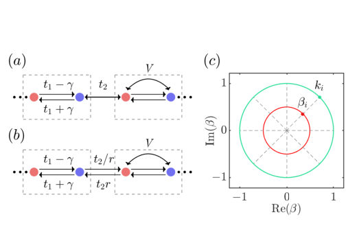
<figcaption class="paper-figure-caption"><b>Fig 1.</b> FIG. 1. Schematic diagram of the non-Hermitian interacting SSH model (a) and the corresponding quasi-reciprocal model (b). (c) The correspondence between βi in the circular gen- eralized Brillouin zone and crystal momentum ki in the con- ventional Brillouin zone.</figcaption>
</figure>
<figure class="paper-figure-card">
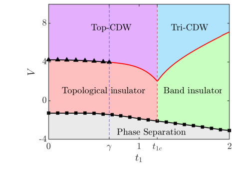
<figcaption class="paper-figure-caption"><b>Fig 2.</b> FIG. 2. Phase diagram of the quasi-reciprocal SSH model in the t1 −V plane. The Top-CDW and Tri-CDW represent topological and trivial CDW phases, respectively. The red line shows the fitted CDW phase boundary given in the main text, while the black line with triangles denotes the phase boundary obtained from numerical extrapolation. The black line with squares indicates the phase-separation boundary ob- tained numerically for L = 20. The red dashed line (t1c ≈1.2 ) marks the topological phase boundary, and the blue dashed line (t1 = γ) indicates the non-Hermitian exceptional point. For t1 &lt; γ, the energy spectrum becomes complex. Other parameter: t2 = 1 and γ = 2/3.</figcaption>
</figure>
<figure class="paper-figure-card">
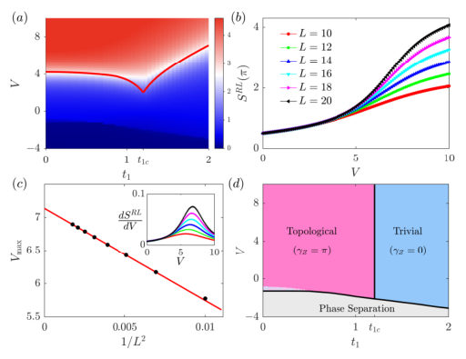
<figcaption class="paper-figure-caption"><b>Fig 3.</b> FIG. 3. (a) Charge-density-wave structure factor SRL(π) in the t1–V plane for a fixed lattice size L = 20. (b) SRL(π) as a function of the interaction V at t1 = 2 for various lattice sizes L. (c) Finite-size extrapolation of Vmax as a function of 1/L2, where Vmax denotes the point at which the derivative dSRL(π)/dV is maximized. The inset shows the derivative dSRL(π)/dV corresponding to the data in panel (b). (d) Zak phase γZ of ˜ H under PBC. The black line indicates the topo- logical phase boundary, with γZ = π in the topological region and γZ = 0 in the trivial region. Other parameters are t2 = 1 and γ = 2/3.</figcaption>
</figure>
<figure class="paper-figure-card">
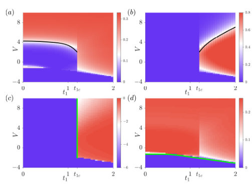
<figcaption class="paper-figure-caption"><b>Fig 4.</b> FIG. 4. Degeneracy structure D(n) of the entanglement spec- trum of the quasi-reciprocal Hamiltonian ˜ H in the t1–V plane. (a) D(4). (b) D(2). (c) log10[D(2) + 10−6], where 10−6 is in- troduced to avoid the divergence of log10(0). (d) D(5). The black and green lines represent the phase boundary in Fig. 2. Common parameters: L = 20, N = 10, t2 = 1, and γ = 2/3.</figcaption>
</figure>
</div>

<p><strong>Summary.</strong> This paper extends the Generalized Brillouin Zone theory to interacting non-Hermitian systems by constructing a quasi-reciprocal Hamiltonian. The authors demonstrate that the topological properties of this complex system are robustly characterized by analyzing the entanglement spectrum degeneracy of the derived quasi-reciprocal model. This establishes a crucial theoretical pathway for studying many-body non-Hermitian physics.</p>
<p><strong>Why it may be interesting.</strong> This work provides a powerful, generalized theoretical tool (GBZ formalism) to analyze complex, interacting, non-Hermitian quantum systems, which is highly relevant for understanding open quantum systems and topological phases in condensed matter.</p>
<details>
<summary>Detailed structure</summary>
<p><strong>Main problem.</strong> The primary challenge addressed is extending the Generalized Brillouin Zone (GBZ) theory, which resolves bulk-boundary correspondence breakdown in non-Hermitian systems, to interacting many-body systems.</p>
<p><strong>Main result.</strong> The authors successfully construct a quasi-reciprocal many-body Hamiltonian whose topological properties are encoded in the entanglement spectrum of the quasi-reciprocal model, providing a route to study interacting non-Hermitian physics.</p>
<p><strong>Method.</strong> The study employs a GBZ transformation to map the original non-Hermitian Hamiltonian (under OBC) to a quasi-reciprocal Hamiltonian (under PBC). Phase diagrams are analyzed using exact diagonalization, calculating the Zak phase and the entanglement spectrum degeneracy.</p>
<p><strong>Model / system.</strong> The model is an interacting non-Hermitian SSH-type model. The theory relies on constructing a quasi-reciprocal Hamiltonian ($   ilde{H}$) that mimics the physics of the original model ($H$) under different boundary conditions.</p>
<p><strong>Key observables.</strong> Zak phase, structure factor of the charge-density-wave (CDW) phase ($S_{RL}(k)$), and the degeneracy of the low-lying entanglement spectrum (ES).</p>
<p><strong>Important parameters / regimes.</strong> Interaction strength ($V$), hopping parameters ($t_1, t_2$), and the topological transition point ($t_{1c}$).</p>
<p><strong>Assumptions / limitations.</strong> The analysis assumes the applicability of the GBZ transformation to interacting systems and that the quasi-reciprocal Hamiltonian accurately captures the physics of the original model.</p>
<p><strong>Figures summary.</strong> Figures illustrate the mapping between the original and quasi-reciprocal models, show the phase diagram in the $t_1-V$ plane identifying different CDW and topological phases, and plot the dependence of the structure factor and ES degeneracy on system parameters.</p>
<p><strong>Paper structure.</strong> The paper first establishes the theoretical framework using the GBZ to derive the quasi-reciprocal Hamiltonian. It then applies this formalism to the interacting SSH model, using multiple diagnostics (CDW structure factor, Zak phase, ES) to map out the phase diagram and confirm the topological nature of the system.</p>
</details>
<details>
<summary>Abstract</summary>
<p>The breakdown of conventional bulk-boundary correspondence (BBC) in   non-Hermitian system can be resolved by the generalized Brillouin   zone (GBZ) theory. However, extending the GBZ theory to interacting   many-body systems remains an open problem. Here, we consider an   interacting non-Hermitian model characterized by a circular GBZ. We   show that, based on a GBZ transformation, a quasi-reciprocal   many-body Hamiltonian can be constructed which, under periodic   boundary conditions (PBC), captures the physics of the original   non-Hermitian model under open boundary conditions (OBC). Using   exact diagonalization (ED), we determine the phase diagram for the   quasi-reciprocal many-body Hamiltonian by computing the Zak phase   and the structure factor of the charge-density-wave (CDW) phase. We   further investigate the entanglement properties and find that the   degeneracy of the low-lying entanglement spectrum characterizes each   phase in the phase diagram. These findings demonstrate that the   topological properties in interacting non-Hermitian system is encoded in   the entanglement spectrum of the quasi-reciprocal model. Our work   establishes a route to studying many-body non-Hermitian physics   within the GBZ formalism.</p>
</details>
<p><sub><a href="#top">↑ back to top</a></sub></p>

<p><a id="paper-2606.02743"></a></p>
<h3 id="geometric-decoherence-time-in-lindbladian-dynamics"><a href="http://arxiv.org/abs/2606.02743v1">Geometric Decoherence Time in Lindbladian Dynamics</a></h3>
<p><strong>Authors:</strong> Rishabh Jha, Stephan Haas, Abhinav Prem<br>
<strong>Type:</strong> theory · <strong>Category:</strong> statistical mechanics · <strong>PDF:</strong> <a href="https://arxiv.org/pdf/2606.02743v1">https://arxiv.org/pdf/2606.02743v1</a><br>
<strong>Analysis basis:</strong> full PDF text, analyzed in chunks
<strong>Topic relevance:</strong> 🔥 <code>entanglement &amp; information structure</code> <strong>4/5</strong> · <code>correlated / nonlocal dissipation</code> <strong>3/5</strong> · <code>driven-dissipative phase transition</code> <strong>3/5</strong> · <code>methods for driven-dissipative</code> <strong>3/5</strong> · <code>non-equilibrium dynamics</code> <strong>3/5</strong> · <code>analog quantum simulation</code> <strong>2/5</strong> · <code>non-equilibrium universality</code> <strong>2/5</strong> · <code>Keldysh / 2PI / non-Gaussian methods</code> <strong>1/5</strong> · <code>exotic spin models in light-matter</code> <strong>1/5</strong></p>
<div class="figure-strip-hint">↔ Scroll figures horizontally</div>
<div class="paper-figures-scroll">
<figure class="paper-figure-card">
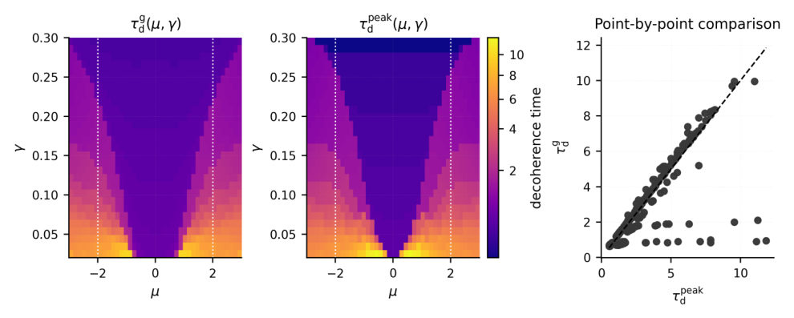
<figcaption class="paper-figure-caption"><b>Fig 1.</b> Figure 1: Decoherence-time landscape for the balanced gain/loss Kitaev chain in the (µ, γ) plane. Left: geometric decoherence time τ g d(µ, γ). Center: peak-based estimate τ peak d (µ, γ). Right: point-by-point comparison, with dashed diagonal τ peak d = τ g d. Vertical guide lines at µ = ±2J mark the closed-system topological phase boundaries. The topological phase |µ| &lt; 2J sustains longer τ g d than the trivial phase, and within the topological phase τ g d shows a local suppression at the chiral-symmetric point µ = 0 and decreases again toward |µ| = 2J. The comparison panel shows that τ peak d is correlated with τ g d, while exhibiting qualitatively significant discrepancies in the...</figcaption>
</figure>
<figure class="paper-figure-card">
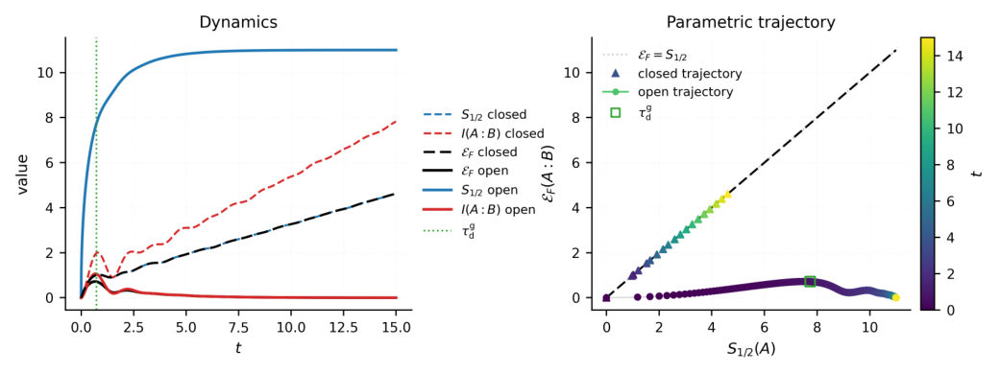
<figcaption class="paper-figure-caption"><b>Fig 2.</b> Figure 2: Geometric decoherence time in the topological phase of the open Kitaev chain (µ = 0.5, J = ∆= 1, L = 128, LA = 11, balanced gain/loss γ = 0.15, N´eel initial state). Left: time evolution of EF (fermionic Gaussian negativity), S1/2(A), and I(A:B) under unitary dynamics (dashed) and Lindbladian dynamics (solid); the vertical marker indicates τ g d. Right: parametric trajectory Γ(t) = (S1/2, EF ) colored by time; triangles denote unitary dynamics, circles denote Lindbladian dynamics. Under unitary dynamics, the trajectory is pinned to the diagonal; under Lindbladian dynamics it bends away at τ g d (square marker). At late times EF and I(A:B) both vanish, signaling asymptotic...</figcaption>
</figure>
<figure class="paper-figure-card">
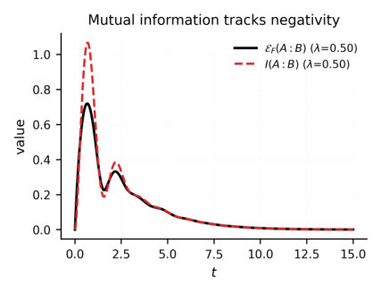
<figcaption class="paper-figure-caption"><b>Fig 3.</b> Figure 3: Mutual information I(A:B) and fermionic Gaussian negativity EF as functions of time for the same parameters as Fig. 2. The two quantities share the same peak and trough times as well as the same asymptotic decay rate, consistent with Theorem 1 (see Sec. II C). Exponential fits over the second half of the time window yield λEF ≈λI ≈0.50, confirming a shared decay expo- nent to two significant figures.</figcaption>
</figure>
<figure class="paper-figure-card">
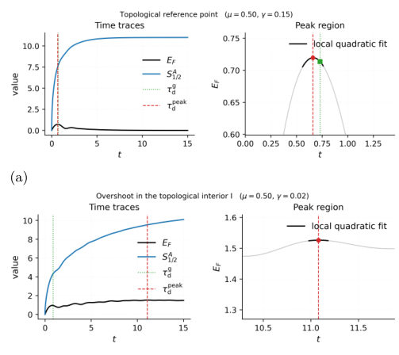
<figcaption class="paper-figure-caption"><b>Fig 4.</b> Figure 4: Fixed-µ comparison within the topological phase. Left: topological reference point, µ = 0.50 and γ = 0.15. Right: weaker dissipation, µ = 0.50 and γ = 0.02. The weak-dissipation panel shows the clear overshoot of τ peak d relative to τ g d where the peak is at- tained at much later time and is comparatively flat. In both panels τ g d is extracted from Definition 1 via the entropy–negativity trajectory, which is not shown here.</figcaption>
</figure>
<figure class="paper-figure-card">
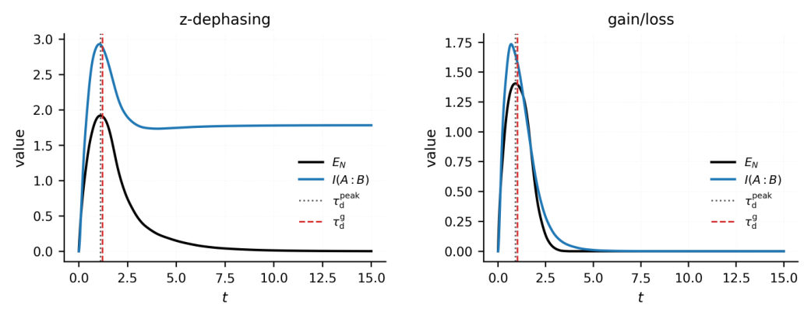
<figcaption class="paper-figure-caption"><b>Fig 5.</b> Figure 5: Time evolution of exact logarithmic negativity EN and von Neumann mutual information I(A:B) for the interacting XXZ chain under two dissipative protocols. (a) Under local z-dephasing (which preserves a strong U(1) symmetry), EN →0 while I(A:B) saturates to a nonzero plateau, signaling a separable but non-product NESS. The mutual-information tracking implied by Proposition 1 and Theorem 1 does not apply because the NESS does not factorize. (b) Under local gain/loss, which removes the Sz tot conservation, both EN and I(A:B) decay to zero with aligned peak and decay times, consistent with asymptotic factorization (Proposition 1 and Theorem 1). Parameters: open XXZ chain, L = 10,...</figcaption>
</figure>
</div>

<p><strong>Summary.</strong> This paper introduces the geometric decoherence time ($    au_{g}^{    ext{d}}$) as a precise measure for the onset of decoherence in open quantum systems. By analyzing the breakdown of monotonicity between entanglement measures and entropy, the authors demonstrate that this timescale is sensitive to underlying physics, such as topological order in the Kitaev chain. It provides a powerful tool for characterizing the transition from coherent quantum dynamics to a classical steady state.</p>
<p><strong>Why it may be interesting.</strong> This work provides a rigorous, operational measure ($    au_{g}^{    ext{d}}$) to quantify when a quantum system effectively loses its quantum coherence due to environmental coupling, which is crucial for understanding quantum computation and thermalization.</p>
<details>
<summary>Detailed structure</summary>
<p><strong>Main problem.</strong> The paper addresses the challenge of defining a clear dynamical timescale for the onset of decoherence in open many-body systems, where entanglement loss and entropy growth occur concurrently.</p>
<p><strong>Main result.</strong> The geometric decoherence time ($  au_{g}^{    ext{d}}$), defined by the breakdown of a monotone relation between logarithmic negativity and Rényi entropy, is established as a robust diagnostic scale for decoherence onset.</p>
<p><strong>Method.</strong> The authors analyze the time evolution of quantum correlations using the Lindblad master equation, deriving specific criteria based on the monotonicity of entanglement measures.</p>
<p><strong>Model / system.</strong> The study applies to open many-body systems, including the Kitaev chain and the interacting XXZ spin chain, evolving under Lindbladian dynamics characterized by gain and loss jump operators.</p>
<p><strong>Key observables.</strong> Logarithmic Negativity ($  ext{EN}$), Rényi-1/2 Entropy ($S_{1/2}$), Quantum Mutual Information ($I(A:B)$), and the geometric decoherence time ($  au_{g}^{    ext{d}}$).</p>
<p><strong>Important parameters / regimes.</strong> Dissipation rates ($\gamma$), system parameters ($\mu, J, \Delta$), and the comparison between topological and trivial phases.</p>
<p><strong>Assumptions / limitations.</strong> The geometric criterion is assumed to hold for both single-particle Gaussian dynamics and interacting Lindbladian evolution, though symmetry can cause tracking failures.</p>
<p><strong>Figures summary.</strong> Figures compare $  au_{g}^{    ext{d}}$ against $  au_{    ext{peak}}^{    ext{d}}$ for the Kitaev chain, showing topological protection, and illustrate the time evolution of $   ext{EN}$ and $I(A:B)$ for different dissipation protocols in the XXZ chain.</p>
<p><strong>Paper structure.</strong> The paper develops the geometric criterion ($  au_{g}^{    ext{d}}$) by analyzing the entropy-negativity trajectory, applies this to the Kitaev chain to show topological protection, and extends the analysis to the interacting XXZ chain to distinguish between symmetry-protected classical correlations and true decoherence.</p>
</details>
<details>
<summary>Abstract</summary>
<p>The onset of decoherence in open many-body systems lacks a dynamical timescale grounded in the loss of bipartite entanglement. Here, we introduce the $geometric$ $decoherence$ $time$, defined as the earliest moment the monotone relation between logarithmic negativity and Rényi-$\tfrac{1}{2}$ entropy -- exactly equal across any bipartition for pure states -- breaks down under open-system evolution, signaling entropy growth without accompanying entanglement growth. We establish this criterion in both single-particle Gaussian dynamics and many-body Lindbladian evolution. We show that quantum mutual information provides a complementary long-time diagnostic: its asymptotic vanishing is equivalent to factorization of the steady state across the bipartition, a condition strictly stronger than separability, and whenever a product steady state is approached exponentially in trace norm, negativity and mutual information share the same decay rate. In the presence of a strong symmetry, this tracking can fail -- residual classical correlations can survive after entanglement has vanished. In the Kitaev chain with balanced gain and loss, we derive a closed-form solution and show that the topological phase sustains longer coherence times than the trivial phase at identical dissipation, with a local minimum at the chiral-symmetric point. In the interacting XXZ chain, exact many-body evolution shows that local $Z$-dephasing preserves residual classical correlations, whereas gain and loss restore the mutual-information tracking of negativity. Our results establish the geometric decoherence time as a dynamical scale tracking the onset of decoherence.</p>
</details>
<p><sub><a href="#top">↑ back to top</a></sub></p>

<p><a id="paper-2606.03426"></a></p>
<h3 id="criticality-and-quench-dynamics-at-the-anderson-transition-of-a-chern-insulator"><a href="http://arxiv.org/abs/2606.03426v1">Criticality and Quench Dynamics at the Anderson Transition of a Chern Insulator</a></h3>
<p><strong>Authors:</strong> Lara Ulčakar, Jernej Mravlje, Gal Lemut, Tomaž Rejec<br>
<strong>Type:</strong> theory · <strong>Category:</strong> other · <strong>PDF:</strong> <a href="https://arxiv.org/pdf/2606.03426v1">https://arxiv.org/pdf/2606.03426v1</a><br>
<strong>Analysis basis:</strong> full PDF text, analyzed in chunks
<strong>Topic relevance:</strong> 🔥 <code>non-equilibrium dynamics</code> <strong>4/5</strong> · 🔥 <code>non-equilibrium universality</code> <strong>4/5</strong> · <code>analog quantum simulation</code> <strong>3/5</strong> · <code>driven-dissipative phase transition</code> <strong>3/5</strong> · <code>methods for driven-dissipative</code> <strong>2/5</strong> · <code>Keldysh / 2PI / non-Gaussian methods</code> <strong>1/5</strong> · <code>Kondo &amp; dissipative impurity</code> <strong>1/5</strong> · <code>entanglement &amp; information structure</code> <strong>1/5</strong></p>
<div class="figure-strip-hint">↔ Scroll figures horizontally</div>
<div class="paper-figures-scroll">
<figure class="paper-figure-card">
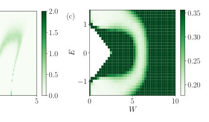
<figcaption class="paper-figure-caption"><b>Fig 1.</b> FIG. 1. Phase diagram in the (u, W) parameter space of the (a) Chern number and (b) the electrical conduc- tance. (c) The energy level-spacing variance of the states per energy window of width 0.1, at u = −1. Data is averaged over (a) 10, (b) 50 and (c) 100 disorder realizations. Dashed line indicates the values of parameters during the quench.</figcaption>
</figure>
<figure class="paper-figure-card">
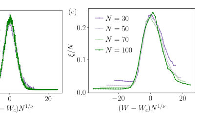
<figcaption class="paper-figure-caption"><b>Fig 2.</b> FIG. 2. Finite-size scaling plots across the phase transition of (a) the Chern number, (b) the electrical conductance and (c) the correlation length ξ/N estimated from the LCM profile. Quantities are presented as functions of the rescaled control parameter (W −Wc)N 1/ν for different system sizes.</figcaption>
</figure>
<figure class="paper-figure-card">
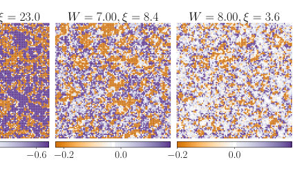
<figcaption class="paper-figure-caption"><b>Fig 3.</b> FIG. 3. Real-space profile of the local Chern marker of the ground state at different disorder strengths that range across the phase transition.</figcaption>
</figure>
<figure class="paper-figure-card">
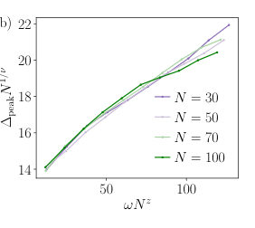
<figcaption class="paper-figure-caption"><b>Fig 4.</b> FIG. 4. (a) AC conductivity σxx as a function of disorder strength at various ω. (b) Full width at half maximum of σxx as function of the rescaled frequency ωN z for different system sizes.</figcaption>
</figure>
<figure class="paper-figure-card">
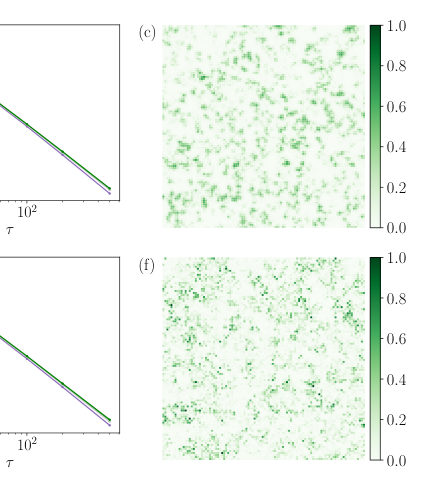
<figcaption class="paper-figure-caption"><b>Fig 5.</b> FIG. 5. Excitation density (a), (d) during quenches with different τ and (b), (e) at the end of the quench as a function of τ. (c), (f) show spatial distribution of excitations after a quench with τ = 10 and N = 100. (a), (b) and (c) correspond to the trivial-to-topological protocol and (d), (e) and (f) to the topological-to-trivial protocol.</figcaption>
</figure>
</div>

<p><strong>Summary.</strong> This work analyzes the topological Anderson transition in a disordered Chern insulator, finding critical exponents consistent with the Integer Quantum Hall Effect. Crucially, the study examines non-equilibrium dynamics during disorder quenches, revealing that the excitation generation and the associated length scale deviate from standard Kibble-Zurek scaling, depending on the quench direction.</p>
<p><strong>Why it may be interesting.</strong> The study bridges topological physics, Anderson localization, and non-equilibrium dynamics, providing insights into how topological protection breaks down under disorder and quench protocols, which is relevant for understanding quantum phase transitions in engineered materials.</p>
<details>
<summary>Detailed structure</summary>
<p><strong>Main problem.</strong> The study investigates the critical properties and non-equilibrium dynamics across the topological Anderson phase transition in a strongly disordered Chern insulator.</p>
<p><strong>Main result.</strong> The transition is characterized by critical exponents consistent with the Integer Quantum Hall Effect, but the non-equilibrium excitation density does not follow standard Kibble-Zurek scaling, showing direction-dependent behavior.</p>
<p><strong>Method.</strong> The authors employ finite-size scaling, analysis of the Local Chern Marker (LCM) profile, and quench dynamics simulations to extract critical exponents and non-equilibrium scaling laws.</p>
<p><strong>Model / system.</strong> The system is a disordered Chern insulator modeled by the half-filled disordered Qi-Wu-Zhang (QWZ) model, which exhibits a transition between a topological and a trivial Anderson insulating phase.</p>
<p><strong>Key observables.</strong> Chern number, electrical conductance, Local Chern Marker (LCM) profile, correlation length ($\xi$), excitation density, and critical exponents ($
u, z$).</p>
<p><strong>Important parameters / regimes.</strong> Disorder strength ($W$), system size ($N$), and quench time ($    au$).</p>
<p><strong>Assumptions / limitations.</strong> The analysis relies on comparing results to established universality classes (IQHE) and the Kibble-Zurek mechanism, while acknowledging potential limitations regarding convergence in the thermodynamic limit.</p>
<p><strong>Figures summary.</strong> Figures illustrate the phase diagram (Chern number vs. conductance vs. disorder), finite-size scaling plots for critical observables, and real-space profiles of the LCM at different disorder strengths.</p>
<p><strong>Paper structure.</strong> The paper first establishes the critical nature of the transition using ground-state properties (conductance, Chern number) and extracts critical exponents. It then moves to non-equilibrium dynamics, studying the quench evolution of excitation density and the characteristic length scale, comparing these findings to the Kibble-Zurek prediction.</p>
</details>
<details>
<summary>Abstract</summary>
<p>We study the critical properties of the topological Anderson phase transition in a strongly disordered Chern insulator, separating the topological phase from a trivial Anderson insulator. We show that the transition is characterized by a non-zero electrical conductance and by the emergence of a critical length scale in the real-space profile of the local Chern marker. From this, we extract the correlation-length and the dynamical critical exponents, which are consistent with those of non-interacting models of the integer quantum Hall effect. We then ramp the disorder strength across the transition and study the ensuing dynamics. In contrast to clean topological systems, we find that the excitation density does not follow the Kibble-Zurek scaling. The non-equilibrium length scale associated with the local Chern marker is decoupled from the generation of excitations. For studied system sizes, we find it to be close to the Kibble-Zurek prediction for the topological-to-trivial quench, while it deviates from it for the reverse direction.</p>
</details>
<p><sub><a href="#top">↑ back to top</a></sub></p>

<p><a id="paper-2606.03403"></a></p>
<h3 id="drag-induced-skin-effect-in-a-bose-fermi-mixture"><a href="http://arxiv.org/abs/2606.03403v1">Drag-induced skin effect in a Bose-Fermi mixture</a></h3>
<p><strong>Authors:</strong> Wenjie Liu, Ching Hua Lee, Yi Qin<br>
<strong>Type:</strong> theory · <strong>Category:</strong> quantum gases · <strong>PDF:</strong> <a href="https://arxiv.org/pdf/2606.03403v1">https://arxiv.org/pdf/2606.03403v1</a><br>
<strong>Analysis basis:</strong> full PDF text, analyzed in chunks
<strong>Topic relevance:</strong> 🔥 <code>analog quantum simulation</code> <strong>4/5</strong> · <code>driven-dissipative phase transition</code> <strong>3/5</strong> · <code>non-equilibrium dynamics</code> <strong>3/5</strong> · <code>methods for driven-dissipative</code> <strong>2/5</strong> · <code>non-equilibrium universality</code> <strong>2/5</strong> · <code>Keldysh / 2PI / non-Gaussian methods</code> <strong>1/5</strong> · <code>Kondo &amp; dissipative impurity</code> <strong>1/5</strong> · <code>correlated / nonlocal dissipation</code> <strong>1/5</strong> · <code>entanglement &amp; information structure</code> <strong>1/5</strong></p>
<div class="figure-strip-hint">↔ Scroll figures horizontally</div>
<div class="paper-figures-scroll">
<figure class="paper-figure-card">
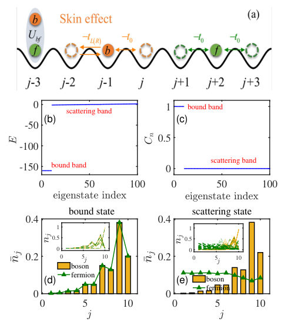
<figcaption class="paper-figure-caption"><b>Fig 1.</b> FIG. 1: (a) Schematic of the Bose–Fermi mixture. Bosons (orange) experience non-reciprocal hopping (tL ̸= tR), whereas fermions (green) remain Hermitian and couple to bosons via the on-site interaction Ubf. (b) Energy spectrum and (c) boson–fermion correlation Cn for the one-boson–one-fermion system. (d),(e) Density distributions for the bound and scattering sectors, respectively, with insets showing representative bosonic and fermionic profiles. Only the strongly correlated bound states exhibit a drag-induced NHSE, where fermions inherit the bosonic boundary accumulation; scattering states remain largely insensitive to the bosonic skin localization. Parameters: t0 = 0.2, tL = 0.5, tR = 1.5,...</figcaption>
</figure>
<figure class="paper-figure-card">
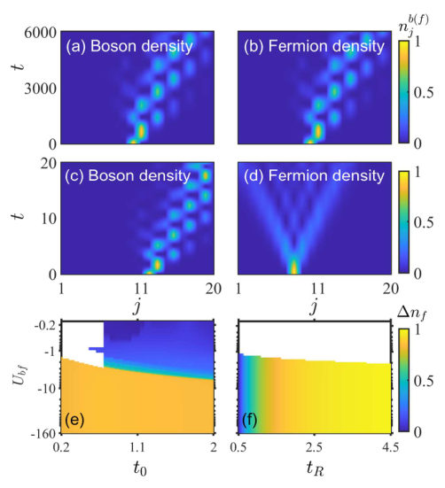
<figcaption class="paper-figure-caption"><b>Fig 2.</b> FIG. 2: Dynamical stability and parameter dependence of the drag-induced NHSE. (a),(b) Time evolution of bosonic and fermionic densities for an initial Bose–Fermi bound pair, showing correlated rightward accumulation of both species. (c),(d) Corresponding dynamics for an initial scattering state, where bosons remain skin-localized while fermions exhibit nearly symmetric ballistic transport. (e),(f) Average fermion density imbalance ∆nf in the parameter spaces (t0, Ubf) and (tR, Ubf), respectively. The drag-induced skin effect strengthens with increasing |Ubf| and saturates in the strong-coupling regime, whereas larger tR substantially enhances fermionic boundary accumulation, demonstrating...</figcaption>
</figure>
<figure class="paper-figure-card">
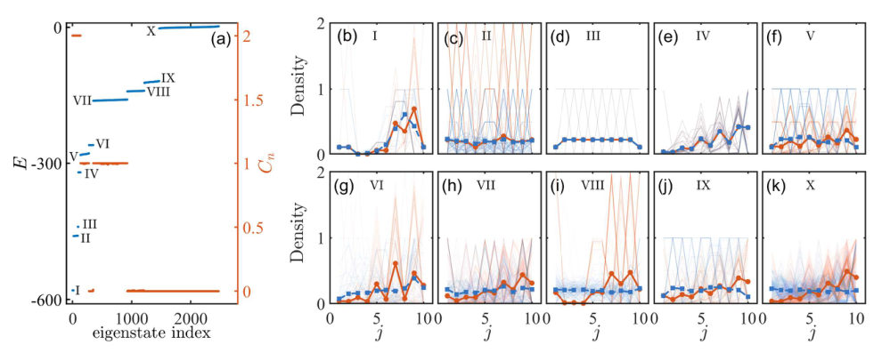
<figcaption class="paper-figure-caption"><b>Fig 3.</b> FIG. 3: Band-resolved spectrum and density structures of a two-boson–two-fermion system. (a) Energy spectrum and boson–fermion correlation Cn as functions of the eigenstate index. The spectrum separates into ten clusters, labeled I–X. (b)–(k) Density distributions for the ten corresponding bands. The faint lines show the density profiles of individual eigenstates within each band, while the thick lines with markers denote the band-averaged densities. Blue and orange curves correspond to bosons and fermions, respectively. This representation reveals not only the average boundary accumulation, but also the intra-band structure of the many-body states. In several bands, individual eigenstates...</figcaption>
</figure>
<figure class="paper-figure-card">
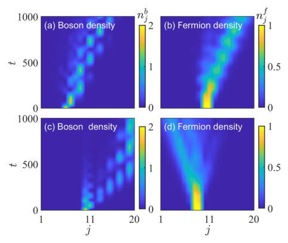
<figcaption class="paper-figure-caption"><b>Fig 4.</b> FIG. 4: Dynamical manifestation of the interaction blockade effect in a two-boson–two-fermion system (L = 20). (a),(b): Initial state with bosons to the left of fermions. (c),(d): Initial state with bosons to the right of fermions. The blockade arises from the interaction-induced many-body domain formed collectively by Ubf, which kinetically suppresses selected fermionic transport channels. Parameters: t0 = 0.2, tL = 0.2, tR = 0.5, Uff = −120, Ubb = −140, Ubf = −160.</figcaption>
</figure>
</div>

<p><strong>Summary.</strong> This paper reveals a drag-induced Non-Hermitian Skin Effect in Bose-Fermi mixtures, where strong interactions enable fermions to exhibit boundary accumulation even though their isolated dynamics are Hermitian. The effect is robustly demonstrated through theoretical modeling and is proposed to be realized in ultracold atomic systems using Floquet engineering.</p>
<p><strong>Why it may be interesting.</strong> This work bridges non-Hermitian physics (NHSE) with interacting quantum gases, providing a concrete, interaction-mediated mechanism for emergent non-Hermitian behavior in ultracold atomic systems.</p>
<details>
<summary>Detailed structure</summary>
<p><strong>Main problem.</strong> The paper investigates a novel mechanism where strong interactions allow fermions, which are otherwise Hermitian, to inherit the Non-Hermitian Skin Effect (NHSE) from bosons in a Bose-Fermi mixture.</p>
<p><strong>Main result.</strong> A drag-induced NHSE is demonstrated, showing that the fermionic boundary accumulation is dynamically stable and requires strong, non-Hermitian bosonic hopping to be induced.</p>
<p><strong>Method.</strong> The analysis uses a strong-coupling expansion to derive an effective Hamiltonian for the bound-state subspace, followed by time-evolution simulations.</p>
<p><strong>Model / system.</strong> The system is a one-dimensional Bose-Fermi mixture modeled by a Hamiltonian incorporating bosonic asymmetric hopping ($t_L 
eq t_R$) and inter-species interaction ($U_{bf}$). The platform is proposed for realization using ultracold atoms in optical lattices.</p>
<p><strong>Key observables.</strong> Fermion density imbalance ($\Delta n_f$), correlation function ($C_n$), and time-evolved density profiles.</p>
<p><strong>Important parameters / regimes.</strong> Strong interaction coupling ($|U_{bf}|$), non-reciprocal hopping ratio ($t_R/t_L$), and the ratio of interaction to hopping scales.</p>
<p><strong>Assumptions / limitations.</strong> The analysis relies on the strong-coupling limit for deriving the effective Hamiltonian, though the effect is shown to persist beyond this regime.</p>
<p><strong>Figures summary.</strong> Figures illustrate the energy spectrum and correlation for bound vs. scattering states, time evolution confirming localization, and parameter maps showing $\Delta n_f$ dependence on interaction and hopping rates.</p>
<p><strong>Paper structure.</strong> The paper progresses from establishing the basic NHSE in bosons, to deriving the effective Hamiltonian for the interacting bound states, demonstrating the drag-induced transfer of the skin effect, and finally mapping the parameter dependence and stability of this interaction-mediated localization.</p>
</details>
<details>
<summary>Abstract</summary>
<p>The non-Hermitian skin effect (NHSE) represents one of the most distinctive phenomena in non-Hermitian physics. Here, we uncover a new drag-induced NHSE mechanism in interacting Bose--Fermi mixtures where only bosons and not fermions experience asymmetric hoppings. %While bosons exhibit intrinsic skin localization due to asymmetric hopping, fermions remain Hermitian in isolation and do not independently support NHSE. We show that strong Bose--Fermi interactions enable fermions to inherit boundary accumulation through correlated bound states. %In the few-body regime, The interplay of interactions, quantum statistics, and non-Hermitian dynamics gives rise to an interaction-induced blockade mechanism, leading to highly asymmetric fermionic transport. We demonstrate that the drag-induced NHSE is dynamically stable and propose a feasible realization in ultracold Bose--Fermi mixtures with Floquet-engineered asymmetric tunneling. Our results establish a general interaction-mediated mechanism for emergent non-Hermitian localization in hybrid quantum matter.</p>
</details>
<p><sub><a href="#top">↑ back to top</a></sub></p>

<p><a id="paper-2606.03343"></a></p>
<h3 id="observation-of-residual-entanglement-in-chip-based-entanglement-purification"><a href="http://arxiv.org/abs/2606.03343v1">Observation of residual entanglement in chip-based entanglement purification</a></h3>
<p><strong>Authors:</strong> Yonghe Yu, Mujtaba Zahidy, Siyan Zhou, Caterina Vigliar, Karsten Rottwitt, Leif Katsuo Oxenløwe, Yunhong Ding<br>
<strong>Type:</strong> experiment · <strong>Category:</strong> quantum information and computing · <strong>PDF:</strong> <a href="https://arxiv.org/pdf/2606.03343v1">https://arxiv.org/pdf/2606.03343v1</a><br>
<strong>Analysis basis:</strong> full PDF text, analyzed in chunks
<strong>Topic relevance:</strong> 🔥 <code>QC/QI experiment</code> <strong>4/5</strong> · <code>entanglement &amp; information structure</code> <strong>3/5</strong> · <code>quantum optics experiment</code> <strong>3/5</strong> · <code>quantum measurements</code> <strong>2/5</strong> · <code>analog quantum simulation</code> <strong>1/5</strong> · <code>correlated / nonlocal dissipation</code> <strong>1/5</strong> · <code>correlated cavity matter</code> <strong>1/5</strong> · <code>interference shaping light</code> <strong>1/5</strong> · <code>methods for driven-dissipative</code> <strong>1/5</strong> · <code>non-equilibrium dynamics</code> <strong>1/5</strong></p>
<div class="figure-strip-hint">↔ Scroll figures horizontally</div>
<div class="paper-figures-scroll">
<figure class="paper-figure-card">
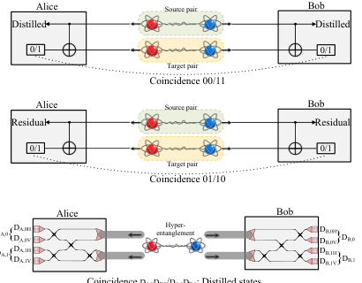
<figcaption class="paper-figure-caption"><b>Fig 1.</b> FIG. 1. Observation of residual entanglement in entanglement purification experiments. (a) Collection of distilled entangle- ment and residual entanglement in the purification process. (b) Chip-based entanglement purification experiment based on hyperentanglement [21]. The hyperentangled photon pairs are distributed into two pairs of optical fibers, where flip er- rors are introduced. Alice and Bob receive the hyperentangled states and map them onto high-dimensional entanglement on chip. The entanglement is then processed by on-chip purifica- tion circuits composed of waveguide crossings. The distilled states and residual entanglement are postselected according to the coincidence detection...</figcaption>
</figure>
<figure class="paper-figure-card">
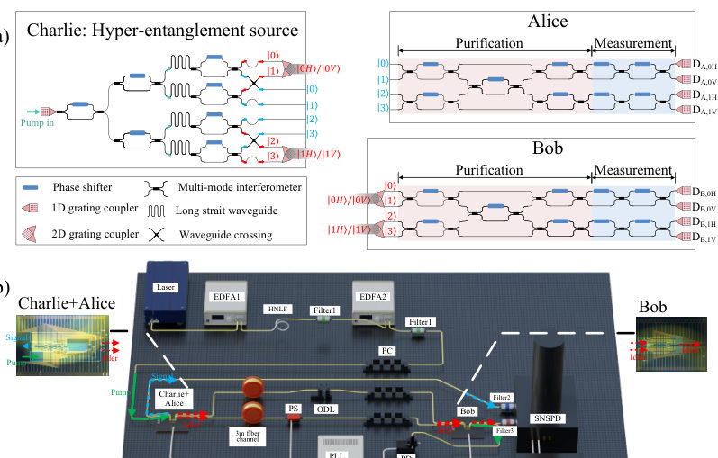
<figcaption class="paper-figure-caption"><b>Fig 2.</b> FIG. 2. The chip layout and experimental setup for chip-based entanglement purification and residual entanglement observation. (a) The layout of the chips used in this work, including the hyperentanglement source and the purification circuit of Alice and Bob. Entangled photon pairs are generated by spontaneous four-wave mixing (SFWM). The signal photons keep the high- dimensional encoding and are routed to Alice through waveguides, while the idler photons are converted into polarization-spatial hyper-encoding and delivered to Bob via single-mode fibers. The Mach-Zehnder interferometers (MZI) on Alice and Bob can be configured to implement the purification protocol shown in Fig. 1(b) or the...</figcaption>
</figure>
<figure class="paper-figure-card">
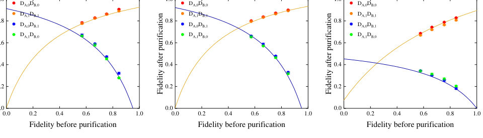
<figcaption class="paper-figure-caption"><b>Fig 3.</b> FIG. 3. Experimental results of the fidelity of the distilled entangled state and the residual entanglement under BF noise (a), PF noise (b), and white noise (c). As we explained in Fig. 1(b), coincidence events DA,0DB,0 or DA,1DB,1 correspond to the distilled state, while DA,0DB,1 or DA,1DB,0 indicate purification failure, where residual entanglement may exist. In this figure, to reveal the residual entanglement, the fidelity of the spatial qubit is fixed, while different levels of noise are applied to the polarization qubit. The theoretical calculated fidelity of the distilled and residual entanglement as a function of Fp is also provided.</figcaption>
</figure>
<figure class="paper-figure-card">
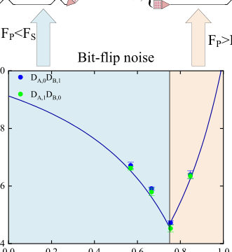
<figcaption class="paper-figure-caption"><b>Fig 4.</b> FIG. 4. Experimental demonstration of the residual entangle- ment as a function of the polarization-state fidelity Fp under different circuit configurations. For Fp &lt; Fs, the original purification circuit is applied (light blue arrow), whereas for Fp &gt; Fs, the reconfigured circuit indicated by the light red arrows is used. The experimental results for the residual en- tanglement after purification also show good agreement with the theoretical calculation.</figcaption>
</figure>
</div>

<p><strong>Summary.</strong> This paper reports the experimental observation of residual entanglement in a chip-based entanglement purification system utilizing hyperentanglement. By leveraging the reconfigurability of integrated photonics, the authors show that usable residual entanglement can always be obtained, even when noise affects the different quantum degrees of freedom unequally. This advances the feasibility of building robust, on-chip quantum repeaters.</p>
<p><strong>Why it may be interesting.</strong> This work provides a highly practical, integrated platform demonstration for quantum networking, showing how to salvage valuable quantum information (residual entanglement) that would otherwise be lost in noisy channels.</p>
<details>
<summary>Detailed structure</summary>
<p><strong>Main problem.</strong> The paper addresses the challenge of maximizing the utility of quantum resources by observing and utilizing residual entanglement generated during entanglement purification processes.</p>
<p><strong>Main result.</strong> The authors experimentally demonstrate a chip-based scheme that reliably obtains residual entanglement suitable for further purification, even when the error rates across different degrees of freedom are unbalanced.</p>
<p><strong>Method.</strong> They implemented a single-copy entanglement purification scheme using integrated silicon photonics, analyzing coincidence detection events to distinguish between successfully distilled and residual entangled states.</p>
<p><strong>Model / system.</strong> The physical platform is chip-based quantum optics using silicon photonics, which supports hyperentanglement encoding across multiple degrees of freedom (e.g., polarization and spatial modes). The system is designed to simulate and mitigate bit-flip and phase-flip noise.</p>
<p><strong>Key observables.</strong> Fidelity of distilled entanglement and residual entanglement; coincidence rates; and the ability to maintain residual fidelity above a critical threshold (e.g., 0.5).</p>
<p><strong>Important parameters / regimes.</strong> The relative fidelities of the two degrees of freedom ($F_p$ vs $F_s$); noise types (BF, PF, white noise); and the reconfigurability of the integrated photonic circuits.</p>
<p><strong>Assumptions / limitations.</strong> The analysis assumes the initial state is a hyperentangled state and relies on the reconfigurability of integrated photonics to manage unequal error rates between DOFs.</p>
<p><strong>Figures summary.</strong> Figures illustrate the chip layout, experimental setup, and crucial results showing the fidelity of both distilled and residual entanglement under various noise conditions (BF, PF, white noise).</p>
<p><strong>Paper structure.</strong> The paper progresses by first establishing the need for purification, detailing the chip-based hyperentanglement setup, presenting the methodology for observing residual entanglement from failed events, and finally quantifying the success of the scheme under different noise models.</p>
</details>
<details>
<summary>Abstract</summary>
<p>Entanglement purification is an essential component of quantum repeaters, as it can improve the fidelity of the distributed entangled states and mitigate the effects of the noisy channel. Successful purification yields entangled states with increased fidelity, whereas failed events can still retain residual entanglement that remains usable for further purification when the error rates of the two degrees of freedom (DOFs) are unbalanced. In this paper, we demonstrate a single-copy entanglement purification scheme based on hyperentanglement using silicon chips and experimentally observe the presence of residual entanglement. Leveraging the reconfigurability of integrated photonics, our scheme ensures that, under bit-flip noise acting on the two DOFs, residual entanglement suitable for further purification can always be obtained, regardless of which DOF has the higher error rate. Our results demonstrate the advantages of integrated photonics for quantum information processing and provide guidance for the optimized utilization of entanglement resources in on-chip entanglement purification and future quantum repeater systems.</p>
</details>
<p><sub><a href="#top">↑ back to top</a></sub></p>

<p><a id="paper-2606.02942"></a></p>
<h3 id="maximizing-information-flow-in-three-coin-quantum-walk-from-initial-entanglement-to-integrated-photonic-implementation"><a href="http://arxiv.org/abs/2606.02942v1">Maximizing Information Flow in Three-Coin Quantum Walk: from Initial Entanglement to Integrated Photonic Implementation</a></h3>
<p><strong>Authors:</strong> Seyed Mohsen Moosavi Khansari<br>
<strong>Type:</strong> both · <strong>Category:</strong> quantum information and computing · <strong>PDF:</strong> <a href="https://arxiv.org/pdf/2606.02942v1">https://arxiv.org/pdf/2606.02942v1</a><br>
<strong>Analysis basis:</strong> full PDF text, analyzed in chunks
<strong>Topic relevance:</strong> 🔥 <code>entanglement &amp; information structure</code> <strong>4/5</strong> · <code>analog quantum simulation</code> <strong>3/5</strong> · <code>quantum optics experiment</code> <strong>3/5</strong> · <code>QC/QI experiment</code> <strong>2/5</strong> · <code>non-equilibrium dynamics</code> <strong>2/5</strong> · <code>interference shaping light</code> <strong>1/5</strong> · <code>methods for driven-dissipative</code> <strong>1/5</strong></p>
<div class="figure-strip-hint">↔ Scroll figures horizontally</div>
<div class="paper-figures-scroll">
<figure class="paper-figure-card">
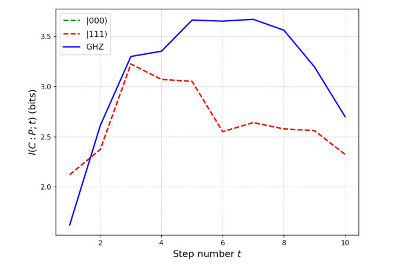
<figcaption class="paper-figure-caption"><b>Fig 1.</b> Figure 2. Mutual information 𝐼(𝐶; 𝑃; 𝑡) versus step number 𝑡 for initial states ∣000⟩ (green dashed), ∣ 111⟩ (red dashed), and GHZ (blue solid) with 𝛼= 1, 𝐿= 5. The GHZ state starts lower (1.62 bits) but surpasses the separable states from 𝑡= 3 onward, reaching a value of 3.00 bits at 𝑡= 10, which is approximately 18% higher than the value for the ∣000⟩ state (2.54 bits) and 12% higher than for ∣ 111⟩ (2.68 bits). The non-monotonic behaviour stems from quantum interference due to initial entanglement.</figcaption>
</figure>
<figure class="paper-figure-card">
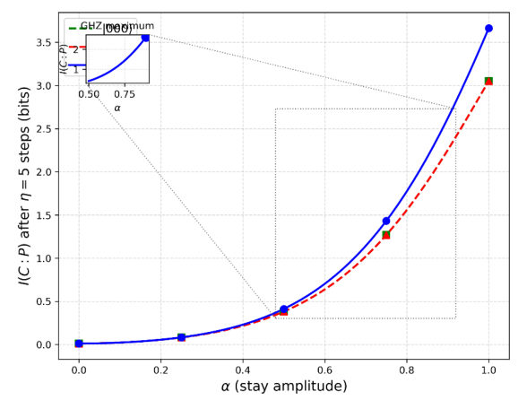
<figcaption class="paper-figure-caption"><b>Fig 2.</b> Figure 3. Mutual information 𝐼(𝐶: 𝑃) after 𝑡= 5 steps as a function of the staying parameter 𝛼 for the initial states ∣000⟩ (green), ∣111⟩ (red), and GHZ (blue). The separable states exhibit a monotonic increase with 𝛼, while the GHZ state shows a distinct maximum at 𝛼≈0.71. The inset provides a magnified view of the maximum region.</figcaption>
</figure>
</div>

<p><strong>Summary.</strong> This work investigates how to maximize information flow in a three-coin quantum walk by controlling the initial entanglement and the probability of non-displacement. The key finding is that initial three-partite entanglement is a powerful resource, and optimal performance is achieved by tuning a specific control parameter $\alpha$. The authors conclude by proposing a scalable implementation using integrated photonics.</p>
<p><strong>Why it may be interesting.</strong> It directly addresses the use of entanglement as a quantifiable resource to enhance quantum transport and information processing, linking abstract quantum information measures to concrete physical implementations in photonics.</p>
<details>
<summary>Detailed structure</summary>
<p><strong>Main problem.</strong> The paper aims to maximize the rate of information flow in a quantum walk system by controlling the initial entanglement and the dynamics of the walk.</p>
<p><strong>Main result.</strong> Initial three-partite entanglement significantly accelerates the growth of mutual information, and the optimal information flow is achieved by tuning a non-displacement amplitude parameter $\alpha$ to a specific intermediate value ($\alpha \approx 0.71$).</p>
<p><strong>Method.</strong> The authors use numerical simulation of the quantum state vector and compute the quantum mutual information $I(C; P; t)$ between the coin and position subsystems.</p>
<p><strong>Model / system.</strong> The model is a Three-Coin Quantum Walk (TCQW) on a 1D lattice, where movement is conditionally coupled to the state of three entangled coins. The system is proposed to be implemented using integrated photonics utilizing polarization, spatial modes, and time bins.</p>
<p><strong>Key observables.</strong> Mutual Information $I(C; P; t)$, Position Entropy $S(\rho_p(t))$, and the tunable parameter $\alpha$.</p>
<p><strong>Important parameters / regimes.</strong> The initial state (separable vs. GHZ-type entanglement) and the non-displacement amplitude $\alpha$.</p>
<p><strong>Assumptions / limitations.</strong> The analysis assumes the feasibility of implementing the walk using integrated photonics and models the dynamics based on the conditional movement rule.</p>
<p><strong>Figures summary.</strong> Figures plot the mutual information $I(C: P; t)$ versus time $t$ for different initial states, and also plot $I(C: P)$ versus the tuning parameter $\alpha$ to identify the optimal control point.</p>
<p><strong>Paper structure.</strong> The paper introduces the TCQW model, analyzes the effect of initial entanglement on mutual information growth, determines the optimal control parameter $\alpha$ via entropy analysis, and concludes with a detailed proposal for an integrated photonic realization.</p>
</details>
<details>
<summary>Abstract</summary>
<p>Discrete-time quantum walks are powerful platforms for simulating quantum transport and information processing. Here we introduce a walker on a one-dimensional lattice whose motion is controlled by three entangled coins, each initialized with the Hadamard gate, aiming to maximize information flow. The walker moves only when all three coins yield the same outcome (HHH or TTT), thus coupling the 8-dimensional coin Hilbert space to the position degree of freedom. By analyzing fully separable, fully entangled (GHZ-type) and intermediate initial states, and using the von Neumann entropy of reduced subsystems, we compute the mutual information $I(C;P;t)$ between coin and position. The results show that initial three-partite entanglement accelerates the growth of mutual information by up to 18\% after ten steps (when compared to the lower of the two separable states), although it exhibits short-term non-monotonic dynamics due to quantum interference. For the first time, we introduce a tunable parameter $α$ (amplitude of non-displacement states) and show that the GHZ state reaches a maximum of mutual information at $α\approx 0.71$ - a key finding for optimal control of information flow. Finally, an integrated photonic implementation using polarization, spatial modes and time bins is proposed, where $α$ can be tuned with nonlinear or electro-optic elements. A scalable numerical framework (Python code) for simulations up to $t = 5$ steps is provided. Our findings establish three-partite entanglement as a dynamical resource for maximizing information flow and spatial spreading, with direct applications in quantum state transfer, entanglement-assisted sensing and programmable photonic quantum processors.</p>
</details>
<p><sub><a href="#top">↑ back to top</a></sub></p>

<p><a id="paper-2606.03897"></a></p>
<h3 id="parametrically-induced-strong-coupling-between-a-superconducting-quantum-circuit-and-a-solid-state-spin-ensemble"><a href="http://arxiv.org/abs/2606.03897v1">Parametrically induced strong coupling between a superconducting quantum circuit and a solid-state spin ensemble</a></h3>
<p><strong>Authors:</strong> Alejandro E. Baptista, Jinwoong Kim, Sonia Rani, Xi Cao, Wolfgang Pfaff<br>
<strong>Type:</strong> experiment · <strong>Category:</strong> quantum information and computing · <strong>PDF:</strong> <a href="https://arxiv.org/pdf/2606.03897v1">https://arxiv.org/pdf/2606.03897v1</a><br>
<strong>Analysis basis:</strong> full PDF text, analyzed in chunks
<strong>Topic relevance:</strong> 🔥 <code>QC/QI experiment</code> <strong>4/5</strong> · <code>spintronics-quantum-optics interface</code> <strong>3/5</strong> · <code>Tavis-Cummings &amp; cavity-many-emitter</code> <strong>2/5</strong> · <code>exotic spin models in light-matter</code> <strong>2/5</strong> · <code>analog quantum simulation</code> <strong>1/5</strong> · <code>correlated cavity matter</code> <strong>1/5</strong> · <code>driven-dissipative phase transition</code> <strong>1/5</strong> · <code>quantum optics experiment</code> <strong>1/5</strong></p>
<div class="figure-strip-hint">↔ Scroll figures horizontally</div>
<div class="paper-figures-scroll">
<figure class="paper-figure-card">
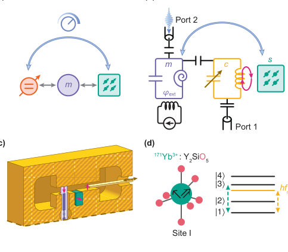
<figcaption class="paper-figure-caption"><b>Fig 1.</b> FIG. 1. Experiment design. (a) Our goal is on-demand, tunable strong coupling via a mixer (purple), ˆm. (b) Lumped element circuit to illustrate our tunable coupling experiment. (c) 3D cross-section sketch of the cavity used to implement the architecture. The cavity (yellow), ˆc, hosts a chip containing a SNAIL coupler (purple), ˆm, spin ensemble crystal (green), ˆs, and dielectric slab (light yellow) for cavity frequency tun- ing. Red arrows show the oscillating fields for the differential cavity mode that couple capacitively to the SNAIL and induc- tively to the spins. A flux coil is inserted near the SNAIL loop for magnetic flux tuning. (d) Spin system: 171Yb3+:YSO; cav- ity frequency is...</figcaption>
</figure>
<figure class="paper-figure-card">
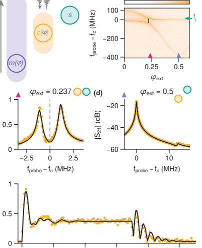
<figcaption class="paper-figure-caption"><b>Fig 2.</b> FIG. 2. Mode characterization. (a) Measurement scheme: The cavity was probed as a function of the reduced external flux (φext = Φext/Φ0) applied to the SNAIL. Mode hybridization leads to a modest flux tuning of the cavity mode. System is probed by measuring transmission and re- flection of the cavity. (b) Cavity spectroscopy vs. φext. Gray bar indicates cavity-SNAIL coupling. The arrow labeled fs is at the spin transition frequency. (c) Line cut at φext = 0.237 (pink marker in (b)). (d) Line cut at φext = 0.5 (blue marker in (b)). (e) Polariton ring-up and ring-down at cavity-spin resonance (gray dashed line in (c)). The cavity was driven at fc with a 7-µs pulse, and response was recorded...</figcaption>
</figure>
<figure class="paper-figure-card">
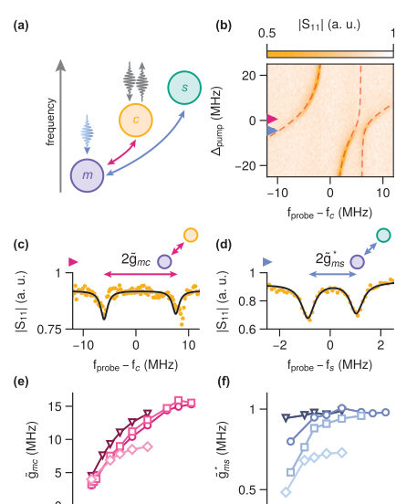
<figcaption class="paper-figure-caption"><b>Fig 3.</b> FIG. 3. Parametrically induced strong coupling. (a) At fixed φext the SNAIL is driven near SNAIL-cavity (ma- genta) or SNAIL-spin (blue) difference frequency. (b) Cavity spectroscopy in the presence of the pump. Dashed lines are simulated frequencies of the 3 coupled modes in the system when the drive is on. Here ∆pump/2π = fpump −∆mc/2π is the difference between the pump frequency, fpump, and the cavity-SNAIL detuning, ∆mc/2π. (c) Line cut of the SNAIL-cavity avoided crossing (pink marker in (b)). (d) Line cut of the SNAIL-spin avoided crossing (blue marker in (b)). (e) SNAIL-cavity coupling, ˜gmc, extracted from normal mode splittings vs. pump strength, ξ, and external flux. (f) Observed...</figcaption>
</figure>
<figure class="paper-figure-card">

<figcaption class="paper-figure-caption"><b>Fig 4.</b> FIG. 4. Suppression of observed parametric spin cou- pling. (a) Strong pump-induced coupling between SNAIL and spins (solid blue) also induces a detuned coupling to the nearby cavity (dashed light blue). (b) True parametric cou- pling, ˜gms, inferred from the observed coupling, ˜g∗ ms. (c) Overlap of each driven eigenmode of the system (as shown spectroscopically in Fig. 3(b)) with the bare SNAIL, cavity, and spin modes, from left to right.</figcaption>
</figure>
<figure class="paper-figure-card">

<figcaption class="paper-figure-caption"><b>Fig 5.</b> FIG. 5. DisCoAlPaCa Design and Simulation. (a) Dis- CoAlPaCa assembly with caps and an American quarter for scale (24.257 mm diameter); colored outlines indicate mode elements following the paper’s color scheme. The tuning di- electric is held in the right cavity gap by a clamp. The flux coil is held in a copper cap over the SNAIL chip. Its position is indicated with a black dashed line. (b) Simulated electric and magnetic fields of the differential mode; magenta arrows indicate field direction.</figcaption>
</figure>
</div>

<p><strong>Summary.</strong> This paper demonstrates a novel architecture for creating high-coherence quantum memories by coupling a superconducting quantum circuit to a solid-state spin ensemble. By using a parametric pump, the researchers induced dynamic strong coupling, enabling fast and controllable quantum state transfer between the two disparate quantum systems.</p>
<p><strong>Why it may be interesting.</strong> This work directly addresses the hardware challenge of quantum memory integration by coupling superconducting circuits (a major QI platform) to long-coherence solid-state spins, which is a key area in quantum networking and computation.</p>
<details>
<summary>Detailed structure</summary>
<p><strong>Main problem.</strong> The primary goal is to achieve efficient, on-demand, and tunable quantum state transfer between superconducting quantum circuits and solid-state spin ensembles to build high-coherence quantum memories.</p>
<p><strong>Main result.</strong> The authors successfully demonstrated dynamic strong coupling using a parametric pump, enabling fast quantum state transfer between the superconducting circuit and the spin ensemble.</p>
<p><strong>Method.</strong> The research employed microwave spectroscopy, measuring transmission and reflection, and analyzing avoided crossings induced by a parametric pump tone.</p>
<p><strong>Model / system.</strong> The system is a hybrid device coupling a superconducting quantum circuit (SNAIL mixer) to a microwave cavity, which is dispersively coupled to a rare-earth spin ensemble ($    ext{}^{171} ext{Yb}^{3+}:   ext{YSO}$). The dynamics are modeled by coupled Hamiltonian terms involving the circuit, cavity, and spin operators.</p>
<p><strong>Key observables.</strong> Avoided crossings in spectroscopy, measured coupling strengths ($  ilde{g}<em ms>{mc}$, $    ilde{g}</em>$), and the resulting state transfer efficiency.</p>
<p><strong>Important parameters / regimes.</strong> Operating temperature ($10 	ext{ mK}$), static couplings ($\approx 27 	ext{ MHz}$), and the pump amplitude ($\xi$).</p>
<p><strong>Assumptions / limitations.</strong> The analysis relies on the dispersive regime approximation and the use of the Rotating-Wave Approximation (RWA) for modeling the coupled dynamics.</p>
<p><strong>Figures summary.</strong> Figures illustrate the experimental setup (Josephson element $
ightarrow$ cavity $
ightarrow$ spin ensemble), mode characterization via spectroscopy, and the measurement scheme for pump-activated interactions showing avoided crossings.</p>
<p><strong>Paper structure.</strong> The paper progresses from characterizing the static couplings in the dispersive regime to demonstrating the dynamic strong coupling mechanism using a parametric pump, culminating in the prediction of fast state transfer.</p>
</details>
<details>
<summary>Abstract</summary>
<p>Efficient quantum state transfer between superconducting circuits and solid-state spins would unlock high-coherence quantum memories for superconducting quantum processors. We demonstrate dynamically controlled strong coupling between a Josephson circuit and a rare-earth spin ensemble. Using a parametric pump, we realize on-demand coupling of several MHz, which will enable faithful state transfer between quantum circuits and spins. Our architecture enables quantum control of spin ensembles, and paves the way for hybrid memories with coherence far beyond those of superconducting circuits alone.</p>
</details>
<p><sub><a href="#top">↑ back to top</a></sub></p>

<p><a id="paper-2606.03630"></a></p>
<h3 id="two-mode-collapse-and-revival-of-quantum-coherent-state-in-a-tilted-optical-lattice"><a href="http://arxiv.org/abs/2606.03630v1">Two-mode collapse and revival of quantum coherent state in a tilted optical lattice</a></h3>
<p><strong>Authors:</strong> Chi-Kin Lai, Shengjie Jin, Yuanzhe Hu, Zhongshu Hu, Fansu Wei, Congwen Li, Tianwei Zhou, Hepeng Yao, Xiaoji Zhou<br>
<strong>Type:</strong> both · <strong>Category:</strong> quantum gases · <strong>PDF:</strong> <a href="https://arxiv.org/pdf/2606.03630v1">https://arxiv.org/pdf/2606.03630v1</a><br>
<strong>Analysis basis:</strong> full PDF text, analyzed in chunks
<strong>Topic relevance:</strong> 🔥 <code>analog quantum simulation</code> <strong>4/5</strong> · <code>non-equilibrium dynamics</code> <strong>3/5</strong> · <code>non-equilibrium universality</code> <strong>3/5</strong> · <code>methods for driven-dissipative</code> <strong>2/5</strong> · <code>Frenkel-Kontorova</code> <strong>1/5</strong> · <code>driven-dissipative phase transition</code> <strong>1/5</strong> · <code>entanglement &amp; information structure</code> <strong>1/5</strong></p>
<div class="figure-strip-hint">↔ Scroll figures horizontally</div>
<div class="paper-figures-scroll">
<figure class="paper-figure-card">

<figcaption class="paper-figure-caption"><b>Fig 1.</b> Figure 1: Experimental setup and measurements of collapse and revival dynamics. (A) Schematic of the experimental system. A 3D cubic optical lattice is formed by three sets of lattice beams: two red-detuned beams (λ = 1064 nm) along the x and z axes, and one blue- detuned beam (λ′ = 760 nm) along the y axis. The probe beam intersects at an angle of 45◦with respect to the x axis in the x-y plane. The 1D bosonic gas is prepared with zero net force. By suddenly reducing the magnetic levitation along the z axis, a tilt quench is introduced, triggering the dynamics, while the lattice depth along the tube is either increased or held constant. (B) Measured quasi-momentum distribution n(q) as a...</figcaption>
</figure>
<figure class="paper-figure-card">

<figcaption class="paper-figure-caption"><b>Fig 2.</b> Figure 2: Evidence of tilt-mode (E-mode) CR . (A1) Spectra of coherent fraction efc for Vz = 8, 9, and 11 Er with E = 772 Hz. Vz is kept fixed after the quench of E. (A2) CR period Tr as a function of Vz (green squares). (B1) efc for E = 439, 536, and 703 Hz, with Vz = 9 Er (J = 49 Hz, U = 987 Hz) held constant following the quench of tilt. (B2) CR period Tr as a function of tilt E (blue circles). In both A and B, the red and blue dashed lines denote the E and U, respectively. The CR period is extracted by fitting a sum of Gaussian functions (S3), with error bars obtained using the bootstrap method. The white data points indicate the numerical simulation results for Tr, analyzed with the...</figcaption>
</figure>
<figure class="paper-figure-card">

<figcaption class="paper-figure-caption"><b>Fig 3.</b> Fig. 1B shows the quasi-momentum distribution n(q) mea- sured via the band mapping scheme during a typical CR pro- cess. Initially, a coherent peak appears at q = 0. After some evolution, the atoms dephase and spread nearly uniformly across the first Brillouin zone (BZ), with coherence later re- covering as the system undergoes both CR and BO. The distri- bution is given by n(q) = ncoh(q) + nincoh(q), with ncoh(q) (red shaded area) the coherent (condensed) atoms forming peaks, and nincoh(q) (blue shaded area) the incoherent (non- condensed) atoms forming a plateau. The coherent fraction is then calculated as fc = ´ dq ncoh(q)/N [49, 50], where N is the total atom number (see more details in...</figcaption>
</figure>
<figure class="paper-figure-card">

<figcaption class="paper-figure-caption"><b>Fig 4.</b> Figure 3: Crossover of two-mode CR amplitudes. (A) Amplitudes of the E-mode (red squares) and U-mode (blue circles) CR as a func- tion of Ji/Ui for E = 772 Hz, Jf = 20 Hz, and Uf = 1105 Hz. Error bars are evaluated using the bootstrap method. The red and blue shaded regions denote the numerically predicted amplitudes of the E and U modes, respectively, with uncertainties obtained using the same fitting procedure as in the experiment. Inset: numerical simulation results for a homogeneous system. The black boxes indi- cate the crossing point at (Ji/Ui)c = 0.08. (B) Crossing points in the initial tunneling-to-interaction ratio for the amplitudes of the two modes at different tilts E. Error...</figcaption>
</figure>
<figure class="paper-figure-card">

<figcaption class="paper-figure-caption"><b>Fig 5.</b> Figure 4: Universal linear scaling of the two modes. Rescaled amplitudes of the U mode (A) and E mode (B) around the crossing point for various tilt values E. The black dashed lines indicate linear fits to the data. Error bars are obtained using the bootstrap method. Inset: numerical simulation results for a homogeneous system.</figcaption>
</figure>
</div>

<p><strong>Summary.</strong> This paper investigates the collapse and revival dynamics of quantum coherence in bosons trapped in a tilted optical lattice. The key finding is the emergence of a two-mode oscillation, where the revival frequency depends on both the particle interactions and the external tilt. By combining experiments and theory, the authors reveal universal scaling laws governing this novel collective dynamic feature.</p>
<p><strong>Why it may be interesting.</strong> This work provides deep insight into non-equilibrium collective dynamics in interacting quantum systems, showing how external driving fields (tilt) can couple to intrinsic interaction dynamics, leading to predictable, universal scaling laws.</p>
<details>
<summary>Detailed structure</summary>
<p><strong>Main problem.</strong> The study investigates the collective dynamics, specifically the collapse and revival (CR) of phase coherence, in quantum coherent states of bosons confined in a tilted optical lattice.</p>
<p><strong>Main result.</strong> The authors report the first observation of two-mode CR dynamics, showing that the revival frequencies are governed by both inter-site interactions and the external tilt, particularly when the tilt is weaker than the interaction.</p>
<p><strong>Method.</strong> The research combines experimental measurements using band mapping to determine the coherent fraction with theoretical modeling and numerical simulations (DMRG/TEBD) to analyze the underlying physics.</p>
<p><strong>Model / system.</strong> The system is modeled as one-dimensional (1D) ultracold bosons in an optical lattice subjected to a linear tilt potential, described by a Bose-Hubbard type Hamiltonian.</p>
<p><strong>Key observables.</strong> Coherent fraction ($f_c$), its spectrum ($e_{fc}$), and the characteristic collapse and revival periods ($T_r$).</p>
<p><strong>Important parameters / regimes.</strong> Tunneling strength ($J$), on-site interaction ($U$), and the tilt energy ($E$). The study compares regimes where $U$ dominates versus where $E$ becomes comparable to $U$.</p>
<p><strong>Assumptions / limitations.</strong> The analysis often assumes the system can be effectively reduced to 1D tubes, and theoretical derivations rely on perturbation theory and small parameter approximations.</p>
<p><strong>Figures summary.</strong> Figures illustrate the experimental setup, the time evolution of the coherent fraction $f_c$ showing beating patterns, and plots demonstrating the universal linear scaling of the two-mode amplitudes around a critical crossing point.</p>
<p><strong>Paper structure.</strong> The paper progresses from establishing the physical model and experimental measurements of CR dynamics to identifying the two distinct modes (U-mode and E-mode). It then develops analytic models and simulations to predict the crossover between these modes and demonstrates the universal linear scaling of their amplitudes.</p>
</details>
<details>
<summary>Abstract</summary>
<p>Collective dynamics is an important out-of-equilibrium feature of quantum coherent states and usually reflects the intrinsic properties of the state. Collapse and revival (CR) dynamics of phase coherence is a well-known example for bosonic coherent states, which is usually induced by applying a quench. Previous studies have shown that the CR frequency is governed solely by interactions, even in the presence of a tilt quench. However, whether such interaction-dominated oscillation is a universal feature remains unknown. In this work, we show that an ensemble of one-dimensional bosons can undergo two-mode CR, with frequencies set by both the interaction and the tilt, particularly when the tilt is weaker than the interaction. The newly discovered tilt mode is enabled by tunneling between lattice sites. When the two modes coexist, the amplitudes of both modes exhibit universal linear scaling for various tilts. These findings clarify the general features of CR dynamics in tilted lattice models and the underlying mechanism, and provide deeper insight into collective dynamics in correlated systems.</p>
</details>
<p><sub><a href="#top">↑ back to top</a></sub></p>

<p><a id="paper-2606.03950"></a></p>
<h3 id="coexistence-of-dipolar-and-quadrupolar-higher-order-topology"><a href="http://arxiv.org/abs/2606.03950v1">Coexistence of dipolar and quadrupolar higher-order topology</a></h3>
<p><strong>Authors:</strong> Konstantin Rodionenko, Maxim Mazanov, Maxim A. Gorlach<br>
<strong>Type:</strong> both · <strong>Category:</strong> other · <strong>PDF:</strong> <a href="https://arxiv.org/pdf/2606.03950v1">https://arxiv.org/pdf/2606.03950v1</a><br>
<strong>Analysis basis:</strong> full PDF text, analyzed in chunks
<strong>Topic relevance:</strong> 🔥 <code>analog quantum simulation</code> <strong>4/5</strong> · <code>driven-dissipative phase transition</code> <strong>3/5</strong> · <code>correlated cavity matter</code> <strong>2/5</strong> · <code>methods for driven-dissipative</code> <strong>2/5</strong> · <code>non-equilibrium dynamics</code> <strong>2/5</strong> · <code>Frenkel-Kontorova</code> <strong>1/5</strong></p>
<div class="figure-strip-hint">↔ Scroll figures horizontally</div>
<div class="paper-figures-scroll">
<figure class="paper-figure-card">

<figcaption class="paper-figure-caption"><b>Fig 1.</b> FIG. 1. Schematic comparison of dipole and quadrupole moments arising in the collection of classical charges (left) and periodic quantum systems (right).</figcaption>
</figure>
<figure class="paper-figure-card">

<figcaption class="paper-figure-caption"><b>Fig 2.</b> FIG. 2. (a) Two-orbital model (a3) obtained by combining two π/2-rotated copies (a1,a2) of the orbital quadrupole insulator36. Positive and negative mode amplitudes and couplings are shown by gray and blue, respectively. The unit cell is shaded. (b) Representative band structures for the doubly-quadrupolar phase with dimerization α = 2 and κ = γ = 0 with four-fold degenerate bands (b1) and mixed dipolar-quadrupolar phase at κ = γ = ∆(b2). Gray areas highlight the topological bandgaps, while inset shows the first Brillouin zone. (c) Wannier bands νx(ky) and νy(kx) obtained via Wilson loops calculation along kx (c1) and ky directions (c2). The quadrupolar (dipolar) Wannier subsectors are...</figcaption>
</figure>
<figure class="paper-figure-card">

<figcaption class="paper-figure-caption"><b>Fig 3.</b> FIG. 3. (a) The modes of a single four-site meta-atom. Couplings J are shown as dotted links. At energy −J, there is a degenerate doublet of quadrupolar (d-like) and dipolar (px+y-like) modes, while at +J – a doublet of monopolar (s-like) and orthogonal dipolar (px−y-like) modes. (b) The single-orbital model in the mixed dipolar-quadrupolar HOTI phase near the ±J energy, where J′, αJ′ ≪J. Edge (corner) states are highlighted schematically in blue (red). (c) The model disassembles into uncoupled quasi-1D “snake”-like generalized SSH chains with alternating nontrivial and trivial topology in the neighboring chains. Each quasi-1D chain contains two practically decoupled spectra formed by...</figcaption>
</figure>
<figure class="paper-figure-card">

<figcaption class="paper-figure-caption"><b>Fig 4.</b> FIG. 4. (a1) Geometry of the unit cell for the optical waveguide lattice in full-wave COMSOL simulation. Waveguides are assumed to be elliptical with refractive index contrast δn = 0.002, semi-axes 2.2 µm and 7.4 µm. Ambient refractive index is set to n = 1.48 corresponding to borosilicate glass. (a2) The p-mode profile for the isolated waveguide. (a3) Possible sequential fabrication method via the femtosecond laser writing technique from the two facets of the glass wafer. (b) Numerically calculated lower (b1) and upper (b2) band structures. (c1,c2) Corresponding numerical spectrum for a finite 4 × 4-unit-cell lattice, with localized corner states amplitude profiles shown on the right.</figcaption>
</figure>
</div>

<p><strong>Summary.</strong> This paper demonstrates a physical realization, using coupled optical waveguides, that supports a mixed higher-order topological insulator exhibiting both dipolar and quadrupolar topological characteristics simultaneously. By analyzing the system's Hamiltonian and using advanced numerical techniques, the authors confirm the coexistence of these two distinct topological invariants in a single structure. This provides a crucial platform for engineering complex topological states in integrated photonics.</p>
<p><strong>Why it may be interesting.</strong> This work is highly relevant to AMO/Quantum Optics as it proposes a concrete, experimentally realizable platform (optical waveguides) to host and study complex topological phases beyond simple SSH models, linking fundamental topology to photonics.</p>
<details>
<summary>Detailed structure</summary>
<p><strong>Main problem.</strong> The paper addresses the theoretical tension in higher-order topological insulators (HOTIs) regarding the non-overlapping nature of dipolar and quadrupolar bulk moments, aiming to demonstrate a system exhibiting both simultaneously.</p>
<p><strong>Main result.</strong> The authors propose and analyze a model that successfully hosts a mixed dipolar-quadrupolar higher-order topological phase, confirmed by observing both corner and edge localized states.</p>
<p><strong>Method.</strong> The study employs Bloch Hamiltonian formulations, nested Wilson loop techniques, and full-wave numerical simulations to calculate topological invariants and analyze edge/corner spectra.</p>
<p><strong>Model / system.</strong> The physical platform is suggested to be arrays of laser-written evanescently coupled optical waveguides. The model is based on a two-orbital or single-orbital meta-atom lattice, approximated by generalized Su-Schrieffer-Heeger (SSH) chains.</p>
<p><strong>Key observables.</strong> Quantized bulk quadrupole moment ($q_{xy}$), bulk polarization ($\mathbf{P}$), corner-localized modes, and edge-localized modes.</p>
<p><strong>Important parameters / regimes.</strong> Coupling strengths ($\kappa, \gamma, \Delta$), lattice geometry parameters ($J', \alpha$), and disorder strengths ($\deltaeta, \kappa, \gamma, \Delta$).</p>
<p><strong>Assumptions / limitations.</strong> The analysis relies on approximating the system with effective two-band models and assumes that the topological character can be separated into dipolar and quadrupolar subsectors via Wannier center analysis.</p>
<p><strong>Figures summary.</strong> Figures illustrate the construction of the two-orbital model, band structures for different topological phases, Wannier bands showing polarization, and finite-size spectra highlighting spectrally separated corner and edge states.</p>
<p><strong>Paper structure.</strong> The paper progresses from establishing the theoretical conflict to proposing a specific lattice model, deriving the Hamiltonian, calculating topological invariants using Wilson loops, and finally confirming the coexistence of both topologies via numerical simulations on a finite lattice.</p>
</details>
<details>
<summary>Abstract</summary>
<p>Two-dimensional higher-order topological insulators are typically classified either as dipolar or quadrupolar depending on the relevant invariant. These two classes were previously considered non-overlapping. Here we put forward an example system exhibiting dipolar and quadrupolar higher-order topology simultaneously, suggest its implementation using the arrays of laser-written evanescently coupled optical waveguides and support our conclusions by the full-wave numerical simulations.</p>
</details>
<p><sub><a href="#top">↑ back to top</a></sub></p>

<p><a id="paper-2606.03922"></a></p>
<h3 id="fast-single-atom-preparation-in-optical-tweezers-via-rydberg-blockade"><a href="http://arxiv.org/abs/2606.03922v1">Fast single-atom preparation in optical tweezers via Rydberg blockade</a></h3>
<p><strong>Authors:</strong> Yiyi Li, Vernon M. Hughes, Michael Peper, Yicheng Bao, Chenyuan Li, Sanzhar Bissenali, Jeff D. Thompson<br>
<strong>Type:</strong> experiment · <strong>Category:</strong> other · <strong>PDF:</strong> <a href="https://arxiv.org/pdf/2606.03922v1">https://arxiv.org/pdf/2606.03922v1</a><br>
<strong>Analysis basis:</strong> full PDF text, analyzed in chunks
<strong>Topic relevance:</strong> 🔥 <code>QC/QI experiment</code> <strong>4/5</strong> · 🔥 <code>Rydberg arrays</code> <strong>4/5</strong> · <code>analog quantum simulation</code> <strong>3/5</strong> · <code>non-equilibrium dynamics</code> <strong>1/5</strong> · <code>quantum optics experiment</code> <strong>1/5</strong></p>
<div class="figure-strip-hint">↔ Scroll figures horizontally</div>
<div class="paper-figures-scroll">
<figure class="paper-figure-card">

<figcaption class="paper-figure-caption"><b>Fig 1.</b> FIG. 1. (a) Collective Rabi oscillations for various atom numbers N (colors indicated in the legend), with on-resonance excitation (top) and detuned excitation (bot- tom, ∆= Ωwhere the effective Rabi frequency is Ω′ = √</figcaption>
</figure>
<figure class="paper-figure-card">

<figcaption class="paper-figure-caption"><b>Fig 2.</b> FIG. 2. (a) Relevant transitions for the two-photon excitation scheme. The 556 nm laser is used for optical pumping, 399 nm and 395 nm are used for two-photon Rydberg excitations, and 369 nm is used for autoionization of the Rydberg state. (b) Timing diagram of the protocol for the two-photon excitation scheme. (c) Exemplary single-shot image of the 4×25 tweezer array with number-resolved imaging. (d) Photon-count histogram of number-resolved images recorded after loading N = 1.9 atoms per tweezer. Dashed lines show Gaussian fits for each atom number N, while the solid black line is the cumulative fit. The inset shows the extracted atom-number probability P(N), compared with a Poisson...</figcaption>
</figure>
<figure class="paper-figure-card">

<figcaption class="paper-figure-caption"><b>Fig 3.</b> FIG. 3. (a) Experimental results (circles) and simulations (dashed and solid lines) for P(0) (red), P(1) (blue), and P(&gt; 1) (gray) as a function of total protocol duration. Dashed lines depict master-equation-based simulations described in the main text. Solid lines include an additional 8% probability of N = 2 →0 loss per pulse. (b) Experimental data (squares) and simulations (solid lines) for LAC. The solid lines are based on population evolutions with fitted rates of γ1→0 = 0(3) s−1, γ2→0 = 353(4) s−1, and γ2→1 = 177(6) s−1. The insets in (a) and (b) show the same data on a logarithmic y-axis scale. The average initial number of atoms loaded is N = 2.3 for both (a) and (b). (c)...</figcaption>
</figure>
<figure class="paper-figure-card">

<figcaption class="paper-figure-caption"><b>Fig 4.</b> FIG. 4. Single-atom preparation with single-photon Ryd- berg transitions. (a) Relevant energy levels for single-photon transitions from the metastable 3P0 state. (b) Probabil- ity distribution of atom number without applying Rydberg pulses (colored bars), compared with a Poisson distribution (black dashed bars). (c) Exemplary single-atom Rabi oscilla- tions. (d) Multi-atom collective Rabi oscillations, measured with N = 1.4. (e) P(0) (red), P(1) (blue), and P(&gt; 1) (gray) as a function of the number of cycles, m, starting from N = 2.0. The inset depicts logarithmic scaling of the y- axis, with dashed lines showing Pth = 10−2 and Pth = 10−3</figcaption>
</figure>
<figure class="paper-figure-card">

<figcaption class="paper-figure-caption"><b>Fig 5.</b> FIG. 5. Cumulative distribution functions (CDF) of effective Rydberg interaction strengths for atom pairs within the same tweezer (black) and in neighboring tweezers (red): (a) for the |36.28, L = 2, F = 5/2⟩state, for a temperature of T = 80 µK and trap frequencies (ωrad, ωax) = 2π × (89 kHz, 15 kHz), with an inter-tweezer spacing of 6.25 µm; and (b) for the |52.31, L = 0, F = 1/2⟩state for a temperature of T = 9 µK and trap frequencies (ωrad, ωax) = 2π ×(65 kHz, 11 kHz), with an inter-tweezer spacing of 10 µm.</figcaption>
</figure>
</div>

<p><strong>Summary.</strong> This paper presents a novel, fast protocol for preparing single atoms in optical tweezer arrays by leveraging intra-tweezer Rydberg blockade and autoionization. By operating on a microsecond timescale, the method significantly overcomes the slow cycle time limitations of current quantum circuit implementations. The research highlights the critical role of minimizing multi-atom loss to achieve scalable, high-fidelity quantum computation.</p>
<p><strong>Why it may be interesting.</strong> This work directly addresses the scalability bottleneck in neutral atom quantum computing platforms by providing a fast, high-fidelity method for preparing single-atom qubits in arrays.</p>
<details>
<summary>Detailed structure</summary>
<p><strong>Main problem.</strong> The primary bottleneck in continuously replenished optical tweezer arrays for quantum circuits is the slow cycle time associated with removing excess atoms from multiply occupied tweezers.</p>
<p><strong>Main result.</strong> The authors demonstrated a microsecond-scale protocol using intra-tweezer Rydberg blockade and autoionization, achieving single-atom filling fractions up to 74.8% and showing a significant speedup over conventional methods.</p>
<p><strong>Method.</strong> They propose and experimentally demonstrate a selective 'remove-one' protocol by cycling Rydberg excitation and autoionization to reduce multi-atom occupancy rapidly.</p>
<p><strong>Model / system.</strong> The system involves neutral atoms (specifically Yb) trapped in optical tweezer arrays. The physics relies on controlled Rydberg blockade interactions and autoionization dynamics.</p>
<p><strong>Key observables.</strong> Single-atom filling fraction ($P^*(1)$), multi-atom probability ($P(>1)$), and the time scale required to reach a target occupancy.</p>
<p><strong>Important parameters / regimes.</strong> The protocol operates on the microsecond timescale, contrasting with millisecond timescales of previous methods; key regimes include two-photon vs. single-photon excitation.</p>
<p><strong>Assumptions / limitations.</strong> The final filling fraction is limited by an unexplained two-body loss mechanism ($N 	o N-2$), which is the primary remaining challenge.</p>
<p><strong>Figures summary.</strong> Figures illustrate collective Rabi oscillations for various atom numbers and show the time evolution of the filling fraction versus the target multi-atom probability threshold for both excitation regimes.</p>
<p><strong>Paper structure.</strong> The paper develops the theory and experimental demonstration by first establishing the need for fast cycling, then comparing two excitation regimes (two-photon vs. single-photon), and finally analyzing the limiting loss mechanisms and optimizing the pulse sequence.</p>
</details>
<details>
<summary>Abstract</summary>
<p>Continuously replenished optical tweezer arrays will unlock unlimited-depth quantum circuits with neutral atom qubits. A key bottleneck limiting the cycle time of these systems is removing atoms from tweezers initially loaded with more than one atom. In the conventional technique of light-assisted collisions, slow collisional dynamics limit the timescale for removing excess atoms to several milliseconds. Here, we propose and demonstrate a scheme for selectively removing one atom at a time from multiply occupied tweezers on a microsecond timescale, using intra-tweezer Rydberg blockade and autoionization. We demonstrate the protocol in $^{171}$Yb in two complementary regimes. With two-photon Rydberg excitation from the ground state, we reduce multi-atom probability to 1% in 64.8 $μ$s, while retaining single atoms in 58.2(2)% of the tweezers, which is comparable to the filling fraction achieved with light-assisted collisions under the same experimental conditions, but over two orders of magnitude faster. With single-photon excitation from the metastable state $^3P_0$, reduced single-atom loss enables a higher filling fraction of 74.8(3)%, at the cost of additional temporal overhead to prepare the atoms in $^3P_0$. The final filling fraction is limited by an unexplained two-body loss mechanism, which, if solved, could enable fast, quasi-deterministic loading.</p>
</details>
<p><sub><a href="#top">↑ back to top</a></sub></p>

<p><a id="paper-2606.03500"></a></p>
<h3 id="fpga-based-feedforward-system-for-photonic-quantum-computing-applications"><a href="http://arxiv.org/abs/2606.03500v1">FPGA Based Feedforward System for Photonic Quantum Computing Applications</a></h3>
<p><strong>Authors:</strong> Daniel Duggan, Simon Filgis, Axel B. Bregnsbo, Jürgen Saalmüller, Jonas S. Neergaard-Nielsen, Tobias Wintermantel, Ulrik L. Andersen<br>
<strong>Type:</strong> experiment · <strong>Category:</strong> quantum information and computing · <strong>PDF:</strong> <a href="https://arxiv.org/pdf/2606.03500v1">https://arxiv.org/pdf/2606.03500v1</a><br>
<strong>Analysis basis:</strong> full PDF text, analyzed in chunks
<strong>Topic relevance:</strong> 🔥 <code>QC/QI experiment</code> <strong>4/5</strong> · <code>quantum measurements</code> <strong>3/5</strong> · <code>quantum optics experiment</code> <strong>3/5</strong> · <code>analog quantum simulation</code> <strong>1/5</strong> · <code>measurement-induced transitions</code> <strong>1/5</strong></p>
<div class="figure-strip-hint">↔ Scroll figures horizontally</div>
<div class="paper-figures-scroll">
<figure class="paper-figure-card">

<figcaption class="paper-figure-caption"><b>Fig 1.</b> Fig. 1: Standing wave inside a cavity with perfectly reflecting mirrors located at z = 0 and z = L. The wave is polarised in the x-direction.</figcaption>
</figure>
<figure class="paper-figure-card">

<figcaption class="paper-figure-caption"><b>Fig 2.</b> Fig. 2: Wigner functions for vacuum, coherent (α = 2), squeezed vacuum, and single-photon states. The single-photon state is non-Gaussian and has a negative Wigner function.</figcaption>
</figure>
<figure class="paper-figure-card">

<figcaption class="paper-figure-caption"><b>Fig 3.</b> Fig. 5: Concept of Gaussian Boson sampling. Squeezed vac- uum states enter on the left hand side, go through a series of phase shifters and beamsplitters (BS) that model a unitary U, and are detected on the right hand side by photon number resolving detectors (PNRD). In the original Boson Sampling proposal, the inputs are single photon states as opposed to Gaussian states.</figcaption>
</figure>
<figure class="paper-figure-card">

<figcaption class="paper-figure-caption"><b>Fig 4.</b> Fig. 4: Wigner functions showing subsystem A before and after ˆx-measurement on subsystem B. Homodyne detection displaces A in phase space, requiring real-time correction.</figcaption>
</figure>
<figure class="paper-figure-card">

<figcaption class="paper-figure-caption"><b>Fig 5.</b> Fig. 6: Schematic of the MB-GBS. A 2-D cluster state is generated via squeezed light and a system of delay lines and beamsplitters. Modes B are measured, inducing displacements in modes A, which enter a delay line to allow for feedforward- ing to occur. This is achieved via the FPGA-based feedforward system.</figcaption>
</figure>
</div>

<p><strong>Summary.</strong> This paper presents an FPGA-based fast feedforward system designed to enable real-time signal processing for Continuous Variable Measurement-Based Quantum Information Processing. By integrating a high-efficiency homodyne detector with low-latency digital electronics, the system overcomes the limitations of post-processing, allowing for deterministic, real-time quantum gate operations in photonic quantum computing.</p>
<p><strong>Why it may be interesting.</strong> This work is highly relevant as it provides a concrete, high-speed engineering solution (FPGA) to a critical bottleneck—real-time control—in the experimental realization of photonic quantum computation protocols.</p>
<details>
<summary>Detailed structure</summary>
<p><strong>Main problem.</strong> The core challenge is enabling low-latency, real-time signal processing required for Continuous Variables (CV) Measurement-Based Quantum Information Processing (MB-QIP) protocols.</p>
<p><strong>Main result.</strong> The authors successfully implemented and demonstrated an FPGA-based fast feedforward system capable of performing necessary signal conditioning and logic operations in real-time with a total system latency of 196 ns.</p>
<p><strong>Method.</strong> The system uses an FPGA to process continuous measurement outcomes from a homodyne detector, performing real-time feedforward corrections necessary to maintain the quantum state during measurement-based computation.</p>
<p><strong>Model / system.</strong> The system is built around a high quantum efficiency, fully fibre-based homodyne detector coupled to an FPGA. This platform processes CV observables ($\hat{x}, \hat{p}$) derived from quantum harmonic oscillator models, which are central to CV MB-QIP.</p>
<p><strong>Key observables.</strong> Quadrature measurements ($\hat{x}, \hat{p}$), system latency (196 ns), detector clearance (15 dB at 1 GHz), and phase output oscillation patterns.</p>
<p><strong>Important parameters / regimes.</strong> Quantum efficiencies $> 95\%$, total system latency of 196 ns, and the need to correct deterministic displacements in phase space.</p>
<p><strong>Assumptions / limitations.</strong> The primary assumption is that the required feedforward corrections can be calculated and applied faster than the measurement rate, bridging the gap between theory and physical implementation.</p>
<p><strong>Figures summary.</strong> Figures illustrate the system architecture (FPGA components, data flow), the performance of the homodyne detector (clearance vs. frequency), and simulated/measured phase output oscillations confirming real-time operation.</p>
<p><strong>Paper structure.</strong> The paper establishes the theoretical need for real-time feedforward in CV MB-QIP, details the physical components (homodyne detector, FPGA), describes the implementation of the feedforward calculation (inner products, CORDIC), and concludes with experimental verification of the low-latency performance.</p>
</details>
<details>
<summary>Abstract</summary>
<p>Field-programmable gate arrays provide a high-performance solution for real-time signal processing in emerging quantum and photonic technologies. We present an FPGA-based fast feedforward system, that incorporates a high quantum efficiency fully fibre based homodyne detector, to enable low-latency signal processing critical for continuous variables (CV) measurement-based quantum information processing (MB-QIP) protocols. CV MB-QIP typically relies on adaptive measurements and/or displacements via feedforward to achieve scalability and universality, but existing implementations typically handle these operations in post-processing, limiting real-time applicability. Our system performs signal acquisition, conditioning, and logic operations in real-time, meeting the tight latency requirements of photonic quantum computing protocols. The detector exhibits a large clearance of 15 dB at 1 GHz with 4 mW linear oscillator and quantum efficiencies of &gt;95% with a total system latency of 196 ns. This work highlights the role of FPGAs in bridging the gap between theoretical models and physical implementations in photonics-based technologies</p>
</details>
<p><sub><a href="#top">↑ back to top</a></sub></p>

<p><a id="paper-2606.02715"></a></p>
<h3 id="trapping-11000-atoms-in-a-tweezer-array-generated-by-a-single-metasurface"><a href="http://arxiv.org/abs/2606.02715v1">Trapping 11,000 Atoms in a Tweezer Array Generated by a Single Metasurface</a></h3>
<p><strong>Authors:</strong> Yuqing Wang, Zhongchi Zhang, Tao Zhang, Yuxuan Liao, Hanteng Wang, Ye Tian, Binjie Ji, Yujia Wu, Luming Ma, Chen Qing, Chengshu Li, Wei Zhang, Yidong Huang, Wenjun Zhang, Xue Feng, Wenlan Chen, Hui Zhai<br>
<strong>Type:</strong> both · <strong>Category:</strong> other · <strong>PDF:</strong> <a href="https://arxiv.org/pdf/2606.02715v1">https://arxiv.org/pdf/2606.02715v1</a><br>
<strong>Analysis basis:</strong> full PDF text, analyzed in chunks
<strong>Topic relevance:</strong> 🔥 <code>analog quantum simulation</code> <strong>4/5</strong> · <code>QC/QI experiment</code> <strong>3/5</strong> · <code>Rydberg arrays</code> <strong>2/5</strong> · <code>entanglement &amp; information structure</code> <strong>1/5</strong> · <code>interference shaping light</code> <strong>1/5</strong> · <code>quantum optics experiment</code> <strong>1/5</strong></p>
<div class="figure-strip-hint">↔ Scroll figures horizontally</div>
<div class="paper-figures-scroll">
<figure class="paper-figure-card">

<figcaption class="paper-figure-caption"><b>Fig 1.</b> FIG. 1. Experimental configuration and statistical characterization of the tweezer array. (a) Schematic of the experimental setup. Key components include a Faraday isolator and polarization optics for beam conditioning, two telescope stages (f1–f4) for beam expansion, a reflective spatial filter to truncate the Gaussian tail, the metasurface as the primary diffractive element, and a monitoring system comprising a high-NA objective, tube lens (f5), and camera. (b) Histogram of the normalized peak intensity distribution of individual tweezers. (c) Histogram of the measured Airy disk radius of tweezers in the focal plane.</figcaption>
</figure>
<figure class="paper-figure-card">

<figcaption class="paper-figure-caption"><b>Fig 2.</b> FIG. 2. Large-scale single-atom trapping performance in the 18,225-site array. (a) Raw single-shot fluorescence image of 87Rb atoms stochastically loaded into the 135×135 metasurface tweezer array. Each bright spot represents a detected single atom; this single shot shows 11400 trapped atoms. (b) Statistical distribution of the filling fraction over 100 consecutive experimental iterations. The system achieves an average loading of 11,022 atoms with a standard deviation of σ = 167, demonstrating high macroscopic stability. (c) Histogram of the site-resolved loading probability across the entire array. The distribution peaks at approximately 60%.</figcaption>
</figure>
<figure class="paper-figure-card">

<figcaption class="paper-figure-caption"><b>Fig 3.</b> FIG. 3. Percolation transition from atom-loading snapshots. (a) Example configurations. Samples of L × L config- urations are chosen within each experimental snapshot. Filled and open circles denote occupied sites and vacant tweezers, respectively, and solid bonds indicate connected links. The green patch illustrates a percolating configuration (X = 1); the red patch does not percolate (X = 0). (b) Percolation probability P(p, L) as a function of loading fraction p for different patch sizes L. The dashed vertical line marks pc ≈0.59. (c) Finite-size scaling collapse plotted against (p −pc)L1/ν with ν = 4/3.</figcaption>
</figure>
</div>

<p><strong>Summary.</strong> This paper demonstrates a breakthrough in scaling atom-based quantum computers by trapping 11,000 atoms using a tweezer array generated by a single metasurface. This approach overcomes limitations of traditional optics, enabling the realization of large-scale quantum processors. Furthermore, the authors analyze the array's connectivity using percolation theory, providing both a physical platform and a theoretical characterization of the system's disorder.</p>
<p><strong>Why it may be interesting.</strong> This work bridges advanced optical engineering (metasurfaces) with fundamental quantum simulation challenges (scaling and disorder), providing a robust platform for studying many-body physics in controllable, large-scale arrays.</p>
<details>
<summary>Detailed structure</summary>
<p><strong>Main problem.</strong> The central challenge in quantum computing is scaling the number of physical qubits, which is limited by the number of controllable trapped atoms.</p>
<p><strong>Main result.</strong> The authors successfully trapped 11,000 individual atoms in a tweezer array generated by a single metasurface, reaching the tens-of-thousands scale for qubit resources.</p>
<p><strong>Method.</strong> They utilized a single metasurface to generate the entire tweezer array, avoiding complex in-vacuum optics, and characterized the resulting random array using percolation theory.</p>
<p><strong>Model / system.</strong> The system uses neutral atoms (e.g., Rb) trapped in an optical tweezer array generated by a metasurface. The array size is large (18,225 sites), and the collective properties are analyzed using percolation theory.</p>
<p><strong>Key observables.</strong> Average trapped atom count ($\sim 11,022$), site-resolved loading probability ($\sim 60\%$), percolation probability $P(p, L)$, and trap depth ($\sim 0.3$ mK).</p>
<p><strong>Important parameters / regimes.</strong> Metasurface diameter ($\sim 2$ cm), working distance ($\sim 1.5$ cm), and the critical percolation probability ($p_c \approx 0.59$).</p>
<p><strong>Assumptions / limitations.</strong> The metasurface is placed outside the vacuum cell to avoid technical complications, and the analysis accounts for propagation through air and glass.</p>
<p><strong>Figures summary.</strong> Figures show the experimental setup, raw single-shot fluorescence images confirming $\sim 11,000$ atoms, and plots demonstrating the percolation transition using finite-size scaling.</p>
<p><strong>Paper structure.</strong> The paper details the experimental setup using the metasurface, quantifies the trapping of a large number of atoms, and then applies statistical theory (percolation) to characterize the connectivity and disorder within the randomly loaded array.</p>
</details>
<details>
<summary>Abstract</summary>
<p>The scalability of physical qubit numbers is a central challenge toward a universal fault-tolerant quantum computer. The inherent scalability of atom array quantum computers stems from the identical nature of atomic qubits, so the available qubit resource is primarily limited by the number of atoms that can be trapped and controlled. Here, we robustly trap 11,000 individual atoms in a tweezer array, thereby enabling the available qubit resource to reach the tens-of-thousands scale for the first time among all quantum computation platforms. This advance is enabled by a single metasurface, approximately 2 cm in diameter, that generates the entire tweezer array without the need for microscope objectives, thereby maximizing laser-power efficiency. The large aperture ensures a working distance of about 1.5 cm, allowing the metasurface to be placed outside the vacuum cell and avoiding the technical complications of in-vacuum operation. We further characterize the randomly loaded atom array using the statistical theory of percolation phase transitions. This work takes an important first step toward a quantum computer at the 10,000-qubit scale.</p>
</details>
<p><sub><a href="#top">↑ back to top</a></sub></p>

<p><a id="paper-2606.03815"></a></p>
<h3 id="a-tutorial-for-characterizing-transmon-qubits"><a href="http://arxiv.org/abs/2606.03815v1">A Tutorial for Characterizing Transmon Qubits</a></h3>
<p><strong>Authors:</strong> Alexandre M. Souza, Davi A. D. Chaves, Carmem M. Gilardoni, Roberto S. Sarthour, João P. Sinnecker, Ivan S. Oliveira<br>
<strong>Type:</strong> experiment · <strong>Category:</strong> quantum information and computing · <strong>PDF:</strong> <a href="https://arxiv.org/pdf/2606.03815v1">https://arxiv.org/pdf/2606.03815v1</a><br>
<strong>Analysis basis:</strong> full PDF text, analyzed in chunks
<strong>Topic relevance:</strong> 🔥 <code>QC/QI experiment</code> <strong>4/5</strong> · <code>correlated / nonlocal dissipation</code> <strong>1/5</strong> · <code>driven-dissipative phase transition</code> <strong>1/5</strong> · <code>entanglement &amp; information structure</code> <strong>1/5</strong> · <code>methods for driven-dissipative</code> <strong>1/5</strong> · <code>non-equilibrium dynamics</code> <strong>1/5</strong> · <code>quantum measurements</code> <strong>1/5</strong> · <code>quantum optics experiment</code> <strong>1/5</strong></p>
<div class="figure-strip-hint">↔ Scroll figures horizontally</div>
<div class="paper-figures-scroll">
<figure class="paper-figure-card">

<figcaption class="paper-figure-caption"><b>Fig 1.</b> FIG. 1. Overview of transmon qubits. (a) Schematic view of the five qubits Soprano-D2 chip. (b) Schematics of a typical chip containing two coupled transmon qubits, labeled Q2 and Q4 in accordance with panel (a). Panel (b) highlights in different colors all essential components for qubit control and readout. Contact pads at one or both ends of different transmission lines identify the components which are electrically connected to electronics outside of the chip. (c) Circuit representation of a capacitively shunted Josephson junction. (d) Energy level structure comparing a harmonic oscillator (dotted line) and a transmon (red solid line).</figcaption>
</figure>
<figure class="paper-figure-card">

<figcaption class="paper-figure-caption"><b>Fig 2.</b> FIG. 2. Bloch sphere representation of a qubit. Each point on the surface of the sphere represents a different quantum state.</figcaption>
</figure>
<figure class="paper-figure-card">

<figcaption class="paper-figure-caption"><b>Fig 3.</b> FIG. 3. Representation of the experimental setup used in the exper- iments, highlighting the different temperature stages of the dilution refrigerator and all low-temperature electronic components. Tem- perature stages where attenuation is not required are connected us- ing 0 dB attenuators for thermal anchoring and impedance matching; these components are not explicitly shown in the figure.</figcaption>
</figure>
<figure class="paper-figure-card">

<figcaption class="paper-figure-caption"><b>Fig 4.</b> FIG. 4. Calibration of traveling-wave parametric amplifier. (a) Signal amplification as a function of pump pulse amplitude and frequency. Optimal operation is achieved at the intersection of the highlighted black lines. (b) The average gain of the amplifier in the 7-8 GHz band as a function of the input signal amplitude. The gain was calcu- lated comparing the output signal with optimized amplification and without amplification.</figcaption>
</figure>
<figure class="paper-figure-card">

<figcaption class="paper-figure-caption"><b>Fig 5.</b> FIG. 6. Readout probe frequency versus flux bias. The initial probe frequency and amplitude are chosen to enable dispersive resonator- qubit interaction with zero flux bias. The maximum readout fre- quency gives a first approximation for the qubit flux sweet spot.</figcaption>
</figure>
</div>

<p><strong>Summary.</strong> This tutorial serves as an essential experimental guide for characterizing superconducting transmon qubits. It walks the reader through the entire process, covering everything from initial setup and single-qubit spectroscopy to advanced measurements of anharmonicity, readout fidelity, and qubit-qubit coupling. The paper is crucial for experimentalists aiming to bring up and operate transmon-based quantum processors.</p>
<p><strong>Why it may be interesting.</strong> For a theoretical physicist, this paper provides a rich experimental realization of open quantum systems dynamics, offering concrete measurements of decoherence rates ($T_1, T_2$) and the practical application of error mitigation protocols like dynamical decoupling and composite pulses.</p>
<details>
<summary>Detailed structure</summary>
<p><strong>Main problem.</strong> The paper provides a comprehensive, practical, and step-by-step guide for experimentalists to characterize and optimize tunable transmon qubits.</p>
<p><strong>Main result.</strong> It details the entire workflow, from cryogenic setup and flux sweet-spot identification to single-shot readout and qubit-qubit coupling characterization.</p>
<p><strong>Method.</strong> The methodology involves a combination of microwave spectroscopy (one-tone/two-tone), dispersive readout measurements, and advanced error characterization techniques like dynamical decoupling and composite pulses.</p>
<p><strong>Model / system.</strong> The physical system is superconducting transmon qubits, whose dynamics are modeled using Hamiltonians that approximate weakly anharmonic quantum oscillators. The characterization relies on mapping bosonic operators to Pauli operators in the two-level approximation.</p>
<p><strong>Key observables.</strong> Qubit transition frequency ($\omega_q$), anharmonicity ($\alpha$), readout fidelity ($f$), effective coupling strength ($J$), and coherence times ($T_1, T_2$).</p>
<p><strong>Important parameters / regimes.</strong> Operating regimes include the dispersive regime ($g \ll \Delta$), and key parameters involve flux bias ($\Phi$), detuning ($\Omega$), and pulse parameters (amplitude, duration).</p>
<p><strong>Assumptions / limitations.</strong> The procedures are highly dependent on the specific chip layout, fabrication details, and measurement hardware, and many advanced techniques rely on the qubit being well-described by the two-level approximation.</p>
<p><strong>Figures summary.</strong> Figures illustrate the qubit energy level structure, Bloch sphere representations, resonator response vs. probe power (bare vs. dressed frequency), qubit spectroscopy vs. flux bias (showing the sweet spot), and fidelity decay curves comparing standard vs. composite pulses.</p>
<p><strong>Paper structure.</strong> The tutorial progresses logically: first covering basic Hamiltonian models and setup; then detailing single-qubit control (Rabi oscillations, anharmonicity); followed by readout optimization (dispersive coupling, heterodyne detection); and finally addressing multi-qubit interactions and error mitigation (coupling strength $J$, composite pulses, DD).</p>
</details>
<details>
<summary>Abstract</summary>
<p>Superconducting transmon qubits are a leading technology for quantum information processing, yet their reliable operation rests on meticulous calibration and characterization routines. These processes have been fine-tuned and are relatively well understood by the quantum computing community. Nevertheless, it is often challenging for newcomers to compile all the available information into a practical experimental flow. In this tutorial, we present a comprehensive walkthrough for the characterization and optimization of tunable transmon qubits, demonstrated on a commercial five-qubit processor. Moving beyond theoretical description, we detail in a straightforward manner the complete workflow, from cryogenic setup and wiring to parametric amplifier optimum operation, flux sweet-spot identification, pulse calibration, and readout optimization. We also demonstrate the characterization of qubit-qubit coupling, covering all steps before multiqubit operations. This guide serves as a reference for experimentalists seeking to efficiently bring up transmon-based quantum devices.</p>
</details>
<p><sub><a href="#top">↑ back to top</a></sub></p>

<p><a id="paper-2606.03044"></a></p>
<h3 id="observation-of-interaction-induced-fast-thouless-pumping-of-solitons"><a href="http://arxiv.org/abs/2606.03044v1">Observation of interaction-induced fast Thouless pumping of solitons</a></h3>
<p><strong>Authors:</strong> Yuqing Li, Jinxiong Jia, Yunfei Wang, Huiying Du, Zhong An, Zhenhua Qiao, Liantuan Xiao, Suotang Jia, Qian Niu, Jie Ma<br>
<strong>Type:</strong> experiment · <strong>Category:</strong> quantum gases · <strong>PDF:</strong> <a href="https://arxiv.org/pdf/2606.03044v1">https://arxiv.org/pdf/2606.03044v1</a><br>
<strong>Analysis basis:</strong> full PDF text, analyzed in chunks
<strong>Topic relevance:</strong> 🔥 <code>analog quantum simulation</code> <strong>4/5</strong> · <code>non-equilibrium dynamics</code> <strong>3/5</strong> · <code>Frenkel-Kontorova</code> <strong>1/5</strong> · <code>driven-dissipative phase transition</code> <strong>1/5</strong> · <code>non-equilibrium universality</code> <strong>1/5</strong></p>
<div class="figure-strip-hint">↔ Scroll figures horizontally</div>
<div class="paper-figures-scroll">
<figure class="paper-figure-card">

<figcaption class="paper-figure-caption"><b>Fig 1.</b> FIG. 1. Realization of Thouless pumping with tunable in- teraction. a, Sketch of experimental setup for coupling dis- crete momentum states of condensed 133Cs atoms via multiple counter-propagating Bragg laser pairs, whose frequency dif- ferences are controlled by engineering multi-frequency compo- nents ωn. b, Atomic interaction is adjusted by tuning the s- wave scattering length a, which varies with the magnetic field B through a broad Feshbach resonance. c, Atomic discrete momentum states pn = 2nℏk (n = −9, · · · , 11) are coupled by the Bragg laser pairs to realize an off-diagonal Aubry-Andr´e- Harper model with three sites (A, B, C) per unit cell. d, Peri- odic modulation of coupling...</figcaption>
</figure>
<figure class="paper-figure-card">

<figcaption class="paper-figure-caption"><b>Fig 2.</b> FIG. 2. Interaction-driven fast quantized Thouless pumping. a-d, Measured atomic center-of-mass displacement δD (orange circles) and participation ratio r (green circles) as a function of evolution time Ωt for different interactions U/Jm. e,f, Numeri- cally calculated instantaneous energy bands for U/Jm = 1.5 and 2 under the mean-field approximation and periodic boundary condition. Color scale represents the projection of time-evolved state |ϕ(t)⟩onto the instantaneous eigenstates |ψNL(t)⟩. g,h, Variations of δD and r measured after a pump cycle Ωt = 2π with U/Jm. The solid lines in a-d, g and h are numerical simulations based on Eq. (1). The error bars denote standard deviations. The...</figcaption>
</figure>
<figure class="paper-figure-card">

<figcaption class="paper-figure-caption"><b>Fig 3.</b> FIG. 3. Interaction-induced nonadiabatic quantized Thouless pumping. a,b, Phase diagrams of Thouless pumping under the interplay between interaction U/Jm and modulation frequency Ω/Jm. Measured (a) and calculated (b) atomic center-of-mass displacement δD obtained after a pump cycle as a function of U/Jm and Ω/Jm, where the hatched regime in a denotes the experimentally inaccessible low-frequency region due to the limitation of decoherence on the long-time propagation. Star points in b mark the parameters of (U/Jm, Ω/Jm) = (2, 0.1), (2.2, 0.1) and (2.2, 0.5), respectively. Nonadiabatic quantized Thouless pumping emerges at the blue region beyond the phase boundary (dashed line). c-e, The...</figcaption>
</figure>
<figure class="paper-figure-card">

<figcaption class="paper-figure-caption"><b>Fig 4.</b> FIG. 4. Dependence of Thouless pumping on the modulation amplitude. a-c, The atomic center-of-mass displacement δD measured after a pump cycle Ωt = 2π as a function of modulation amplitude ∆J/Jm for different interactions U/Jm. The solid lines are numerical simulations based on Eq. (1). The error bars denote standard deviations. The modulation frequency is Ω/Jm = 0.5 with Jm/ℏ= 2π × 1kHz.</figcaption>
</figure>
</div>

<p><strong>Summary.</strong> This paper experimentally investigates Thouless pumping in an atomic Bose-Einstein condensate, demonstrating that interactions can induce fast, non-adiabatic topological transport of matter-wave solitons. By modulating the lattice and tuning interactions, the researchers achieved quantized pumping regimes inaccessible under purely adiabatic conditions. This opens new avenues for engineering fast topological quantum devices using ultracold atoms.</p>
<p><strong>Why it may be interesting.</strong> This work directly bridges concepts from topological physics (Thouless pumping) with experimental quantum simulation using ultracold atoms, providing a clean platform to study nonlinear, interaction-driven quantum phenomena.</p>
<details>
<summary>Detailed structure</summary>
<p><strong>Main problem.</strong> The study investigates how interparticle interactions influence topological transport, specifically Thouless pumping, in periodically driven quantum systems, aiming to operate beyond the limitations of adiabatic driving.</p>
<p><strong>Main result.</strong> The authors observed fast, interaction-induced Thouless pumping of matter-wave solitons at intermediate interaction strengths, and demonstrated nonadiabatic quantized pumping at high modulation frequencies.</p>
<p><strong>Method.</strong> The research uses experimental realization in an atomic Bose-Einstein condensate, measuring the center-of-mass displacement and participation ratio to diagnose topological transport.</p>
<p><strong>Model / system.</strong> The physical system is an atomic Bose-Einstein condensate (BEC) of ${}^{133}	ext{Cs}$ atoms trapped in a periodically modulated lattice in momentum space. The dynamics are modeled by a nonlinear Schrödinger equation incorporating both lattice hopping and mean-field interaction terms.</p>
<p><strong>Key observables.</strong> Center-of-mass displacement ($\delta D$), participation ratio ($r$), and the Chern number (quantized pumping value).</p>
<p><strong>Important parameters / regimes.</strong> Interaction strength ($U$), modulation frequency ($\Omega$), and modulation amplitude ($\Delta J/J_m$).</p>
<p><strong>Assumptions / limitations.</strong> The analysis relies on the mean-field approximation, and initial state preparation is noted as an approximation.</p>
<p><strong>Figures summary.</strong> Figures illustrate the experimental setup, the dependence of the Chern number on interaction, and measurements of $\delta D$ and $r$ over pump cycles for varying interaction and modulation parameters.</p>
<p><strong>Paper structure.</strong> The paper progresses by introducing the physical platform and model, presenting experimental measurements of key observables ($\delta D, r$) across different interaction regimes, and finally developing the theoretical understanding of the nonadiabatic pumping mechanism.</p>
</details>
<details>
<summary>Abstract</summary>
<p>Thouless pumping provides a paradigmatic platform for studying the effects of interactions on topological transport in periodically driven systems. However, most studies have been constrained by adiabatic conditions, which preclude exploration of interaction-driven novel topological states at high driving frequencies. Here, we experimentally investigate the interplay between interaction and modulation frequency in Thouless pumping realized in a periodically modulated lattice in momentum space of atomic Bose-Einstein condensate. We observe fast Thouless pumping of matterwave solitons at intermediate interactions, with no counterpart in the non- or weakly interacting regimes. Beyond the boundary of topological phase transition induced by interaction, nonadiabatic quantized pumping of solitons emerges at high modulation frequencies over a broad interaction range, in good agreement with theoretical calculations, while the solitons remain trapped in the low-frequency adiabatic pumping regime. Our work opens new avenues for accelerating topological transport in driven quantum systems and engineering fast topological devices.</p>
</details>
<p><sub><a href="#top">↑ back to top</a></sub></p>

<p><a id="paper-2606.02930"></a></p>
<h3 id="fast-tensor-network-imaginary-time-evolution-by-implicit-stepping-on-logarithmic-grids"><a href="http://arxiv.org/abs/2606.02930v1">Fast Tensor Network Imaginary Time Evolution by Implicit Stepping on Logarithmic Grids</a></h3>
<p><strong>Authors:</strong> John P. Zima, E. Miles Stoudenmire, Steven R. White, Olivier Parcollet, Jason Kaye<br>
<strong>Type:</strong> theory · <strong>Category:</strong> strongly correlated electrons · <strong>PDF:</strong> <a href="https://arxiv.org/pdf/2606.02930v1">https://arxiv.org/pdf/2606.02930v1</a><br>
<strong>Analysis basis:</strong> full PDF text, analyzed in chunks
<strong>Topic relevance:</strong> 🔥 <code>Kondo &amp; dissipative impurity</code> <strong>4/5</strong> · <code>methods for driven-dissipative</code> <strong>3/5</strong> · <code>analog quantum simulation</code> <strong>2/5</strong></p>
<div class="figure-strip-hint">↔ Scroll figures horizontally</div>
<div class="paper-figures-scroll">
<figure class="paper-figure-card">

<figcaption class="paper-figure-caption"><b>Fig 1.</b> FIG. 1. Imaginary time evolution, starting from a N´eel state, for a 100-spin Heisenberg chain. Top panel: CPU time vs. τ for uniform-stepping TDVP with a time step of 0.1, trapezoid method with n = 4 time steps per panel, and spectral method with comparable accuracy. Upper inset: bond dimensions of methods shown (taking max over all bonds), fixing the dis- carded weight (i.e., total discarded squared Schmidt weight at a bond) to 10−10. Lower inset: zoom of CPU times. The gray lines are linear fits of the last decade in τ, showing loga- rithmic scaling with respect to τ of the trapezoid and spectral methods once the bond dimension saturates. Bottom panel: Overlap error p</figcaption>
</figure>
<figure class="paper-figure-card">

<figcaption class="paper-figure-caption"><b>Fig 2.</b> FIG. 2. (Top) Overlap errors p</figcaption>
</figure>
<figure class="paper-figure-card">

<figcaption class="paper-figure-caption"><b>Fig 3.</b> FIG. 3. (Top) Double occupancy D(T) of the Anderson im- purity model vs. T/TK(U). TK(U) are adjusted to obtain a collapse of the curves for various U. Error bars are 95% confi- dence intervals of METTS sampling error. D(0) is measured directly in the ground state. (Inset) TK vs. the interaction strength U, showing an exponential dependence on U. The dashed curve is a fit TK(U) ≈0.057 × e−0.21U. (Bottom) Average CPU time of the computation of individual METTS versus temperature for different U, showing a log β scaling. The straight dashed line is a linear fit.</figcaption>
</figure>
</div>

<p><strong>Summary.</strong> This paper introduces a novel, highly efficient technique for simulating imaginary time evolution of quantum many-body systems using Tensor Networks. By combining logarithmic time grids with A-stable implicit solvers, the method achieves a dramatic reduction in computational cost, scaling logarithmically with the required evolution time. This breakthrough allows for accurate simulations of complex models like the Anderson impurity model to very low temperatures.</p>
<p><strong>Why it may be interesting.</strong> This work provides a powerful, scalable numerical tool for simulating thermal and ground-state properties of strongly correlated materials, directly impacting research in high-Tc superconductivity and quantum impurity physics.</p>
<details>
<summary>Detailed structure</summary>
<p><strong>Main problem.</strong> The primary goal is to achieve an efficient and stable method for performing imaginary time evolution of quantum many-body wavefunctions represented by Matrix Product States (MPS).</p>
<p><strong>Main result.</strong> The combination of using a logarithmic time grid and A-stable implicit time-stepping methods allows for an exponential reduction in the required number of time steps compared to standard uniform-step approaches.</p>
<p><strong>Method.</strong> The authors employ A-stable implicit time-stepping methods (like the trapezoid rule) applied to the imaginary time evolution ODE, utilizing a logarithmic time grid to resolve long-time dynamics efficiently.</p>
<p><strong>Model / system.</strong> The method is tested on the Heisenberg spin chain and the single-site Anderson impurity model with a metallic bath, which are canonical models in strongly correlated electron physics.</p>
<p><strong>Key observables.</strong> Overlap error, Kondo temperature dependence, and the double occupancy $D(T)$ in the Anderson model.</p>
<p><strong>Important parameters / regimes.</strong> The maximum imaginary time $    au_{\max}$ (or inverse temperature $eta$), and the bond dimension $\chi$.</p>
<p><strong>Assumptions / limitations.</strong> The method assumes the Hamiltonian is positive semi-definite and relies on the stability properties of A-stable implicit solvers, which overcome the stability constraints of explicit methods.</p>
<p><strong>Figures summary.</strong> Figures compare CPU time and overlap error showing logarithmic scaling for advanced methods on the Heisenberg chain, and demonstrate the collapse of $D(T)/D(0)$ vs. $T/T_K(U)$ for the Anderson model.</p>
<p><strong>Paper structure.</strong> The paper introduces the problem, details the logarithmic grid and implicit solver combination, validates the approach on the Heisenberg chain (showing speedup), and applies it to the Anderson impurity model to observe physical phenomena like the Kondo temperature.</p>
</details>
<details>
<summary>Abstract</summary>
<p>We present a new method for the efficient imaginary time evolution of quantum many-body wavefunctions represented by matrix product states (MPS). We first show that logarithmic time grids are sufficient to resolve long imaginary time dynamics, yielding an exponential reduction in the number of time steps compared with standard approaches. We then show that A-stable implicit time-stepping methods for ordinary differential equations allow stable propagation for any time step size. The resulting scheme requires only matrix-vector products and linear solves, standard operations in the MPS toolbox. We validate our approach with two examples: a Heisenberg spin chain, which we use to demonstrate a speedup of several orders of magnitude over the standard time-dependent variational principle method with uniform time steps, and a single-site Anderson impurity model with a metallic bath, for which propagation to large imaginary times allows one to observe the exponential dependence of the Kondo temperature on the interaction strength.</p>
</details>
<p><sub><a href="#top">↑ back to top</a></sub></p>
<hr>
<p>
<a href="index.html">← Index</a>
 · <a href="papers_02.html">Next →</a>
</p>
<hr>

</body>
</html>
